import numpy as np
from scipy import optimize
import matplotlib.pyplot as plt
plt.rcParams['font.size'] = 12
plt.rcParams['xtick.direction'] = 'in'
plt.rcParams['ytick.direction'] = 'in'
plt.rcParams['text.usetex'] = True
plt.rcParams['text.latex.preamble'] = r'\usepackage{amsmath}'
def example_plot(h, n_eig, sqrt_eig):
x = np.linspace(0, n_eig*np.pi, 1000)
y = np.tan(x)
threshold = 100
y[y > threshold] = np.inf
y[y <-threshold] = np.inf
plt.figure(figsize=(7, 4))
plt.plot(x, y, linewidth=1.2, color="blue")
plt.plot(x,-x, linewidth=1.2, color="green")
plt.scatter(sqrt_eig,-sqrt_eig, color='red')
plt.xticks([0, np.pi, 2*np.pi, 3*np.pi, 4*np.pi, 5*np.pi],
['0','$\pi$','$2\pi$','$3\pi$','$4\pi$','$5\pi$'])
plt.xlim(0, 5.0*np.pi)
plt.ylim(-20, 20)
plt.xlabel('$\sqrt{\lambda}/h$')
plt.ylabel('$\\tan \sqrt{\lambda}$, $-\sqrt{\lambda}/h$')
plt.title(r'$h=%3.1f$' % h)
plt.grid()
plt.show()11 Parabolic Partial Differential Equations
11.1 Introduction to Partial Differential Equations
Most physical phenomena, \(\,\)whether in the domain of fluid dynamics, electricity, magnetism, mechanics, optics, or heat flow, \(\,\)can be described in general by partial differential equations(PDEs): \(\,\)in fact, \(\,\)most of mathematical physics are PDEs
What Are PDEs?
A partial differential equation is an equation that contains partial derivatives. In contrast to ordinary differential equations (ODEs), where the unknown function depends on only one variable, in PDEs, the unknown function depends on several variables: \(\,u(x,t)\) depends both on location \(x\) and time \(t\)
A few well-known PDEs
\[ \begin{aligned} u_t &= u_{xx}, &&\scriptsize\text{heat equation in one dimension} \\[5pt] u_t &= u_{xx}+u_{yy}, &&\scriptsize\text{heat equation in two dimension} \\[5pt] u_{tt} &= u_{xx}+u_{yy}+u_{zz}, &&\scriptsize\text{wave equation in three dimension} \\ u_{rr} &+\frac{1}{r}u_r+\frac{1}{r^2}u_{\theta\theta}=0, &&\scriptsize\text{Laplace's equation in polar coordinates} \end{aligned}\]
The unknown function \(u\) always depends on more than one variable. \(\,\)The variable \(u\) (which we differentiate) is called the dependent variable, \(\,\)whereas the ones differentiate with respect to are called the independent variables
Classification is an important concept because the general theory and methods of solution apply only to a given class of equations. \(\,\)Six basic classifications are:
Order of the PDE
\[ \begin{aligned} u_t &= u_{\color{red}{xx}}, && \scriptsize \text{second order} \\ u_{\color{red}{t}} &= u_{\color{red}{x}}, && \scriptsize \text{first order} \\ u_t &= uu_{\color{red}{xxx}}+\sin x, && \scriptsize \text{third order} \end{aligned}\]
Number of Independent Variables
\[ \begin{aligned} u_t &= u_{xx}, && \scriptsize \text{two variables: } \,x \,\text{and } \,t \\ u_t &= u_{rr}+\frac{1}{r}u_{r}+\frac{1}{r^2}u_{\theta\theta}, && \scriptsize \text{three variables: } \,t, \,r \,\text{and } \,\theta \end{aligned}\]
Linearity
\[ \begin{aligned} & u_{tt} = e^{-t}u_{xx}+\sin t, && \scriptsize \text{linear} \\ & \color{blue}{uu_{xx}}+u_t=0, && \scriptsize \text{nonlinear} \\ & u_{xx}+yu_{yy}=0, && \scriptsize \text{linear} \\ & xu_x+yu_y +\color{blue}{u^2}=0, && \scriptsize \text{nonlinear} \end{aligned}\]
A second-order linear equation in two variables is an equation of the form:
\[Au_{xx} +Bu_{xy} +Cu_{yy} +Du_x +Eu_y +Fu = G \tag{SL}\label{eq:SL}\]
where \(A\), \(B\), \(C\), \(D\), \(E\), \(F\), and \(G\) can be constants or given functions of \(x\) and \(y\)
Homogeneity
\(\eqref{eq:SL}\) is called homogeneous if the right hand side \(G(x,y)\) is identically zero for all \(x\) and \(y\).
If \(G(x,y)\) is not identically zero, then the equation is nonhomogeneous
Kinds of Coefficients
The coefficients in \(\eqref{eq:SL}\) are constants, then \(\eqref{eq:SL}\) is said to have constant coefficients (otherwise, \(\,\)variable coefficients)
Three Basic Types of Linear Equations
Parabolic
\(B^2-4AC=0,~\) heat flow and diffusion processes
\(u_t=u_{xx}\)
Hyperbolic
\(B^2-4AC>0,~\) vibrating systems and wave motion
\(u_{tt}=u_{xx}, \;u_{\xi\eta}=0\)
Elliptic
\(B^2-4AC < 0,~\) steady-state phenomena
\(u_{xx}+u_{yy}=0\)
In the case of variable coefficients, the situation can change from point to point
\(yu_{xx}+u_{yy}=0\)
11.2 Diffusion-Type Problems (Parabolic Equations)
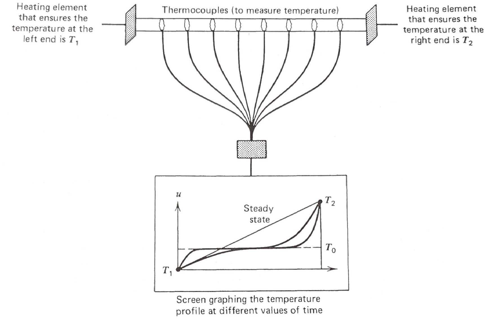
The Mathematical Model of the Heat-Flow
The description of our physical problem requires three types of equations
The PDE describing the physical phenomenon of heat flow
The boundary conditions describing the physical nature of our problem on the boundaries
The initial condition describing the physical phenomenon at the start of the experiment
The Heat Equation
The basic equation of one-dimensional heat flow is
\[u_t=\alpha u_{xx},\;0<x<L, \;0<t<\infty \tag{HE}\label{eq:HE}\]
This equation is derived from the basic conservation of energy
Boundary Conditions
All physical problems have boundaries of some kind, \(\,\)so we must describe mathematically what goes on there in order to adequately describe the problem. Since the temperature \(\,u\,\) was fixed for all time \(t>0~\) at \(~T_1\) and \(T_2~\) at the two ends \(\,x=0~\) and \(~x=L\)
\[ \begin{array}{r} u(0,t) = T_1\\ u(L,t) = T_2 \end{array}, \;\; 0 < t < \infty \tag{BCs}\label{eq:BCs}\]
Initial Condition
All physical problems must start from some value of time (generally called \(t=0\)), \(\,\)so we must specify the physical apparatus at this time. Since we started monitoring the rod temperature from time the rod has achieved a constant temperature \(T_0\), \(\,\)we have
\[ u(x,0) = T_0, \;\; 0 \leq x \leq L \tag{IC}\label{eq:IC}\]
By writing \(\eqref{eq:HE}\), \(\eqref{eq:BCs}\), and \(\eqref{eq:IC}\) together, \(\,\)we have what is called an initial-boundary-value problem. The interesting here, which is not at all obvious, is that there is only one function \(u(x,t)\) that satisfies the problem
More Diffusion-Type Equations
Lateral Heat Loss Proportional to the Temperature Difference
The equation
\[u_t=\alpha u_{xx} -\beta (u -u_0),\;\beta>0\]
describes heat flow in the rod with both diffusion \(\alpha u_{xx}\) along the rod and heat loss (or gain) across the lateral sides of the rod. \(\,\)Heat loss (\(u>u_0\)) or gain (\(u<u_0\)) is proportional to the difference between the temperature \(u(x,t)\) and the surrounding medium \(u_0\)
Internal Heat Source
The nonhomogeneous equation
\[u_t=\alpha u_{xx}+f(x,t)\]
corresponds to the situation where the rod is being supplied with an internal heat source
Diffusion-Convection Equation
Suppose a pollutant is being carried along in a stream moving with velocity \(v\). \(\,\)The rate of change \(u_t\) is measured by the diffusion-convection equation
\[u_t=\alpha u_{xx}-vu_x\]
The term \(\alpha u_{xx}\) is the diffusion contribution and \(-vu_x\) is the convection component
11.3 Derivation of the Heat Equation
\(~\)

Suppose we have a one-dimension rod of length \(L\) for which we make the following assumptions:
The rod is made of a single homogeneous conducting material
The rod is laterally insulated (heat flows only in the \(x\)-direction)
The rod is thin (the temperature at all points of a cross section is constant)
If we apply the principle of conservation of energy to the segment \([x,x+\Delta x]\), \(\,\)we can claim
\[ \begin{aligned} \text{Net Change} & \text{ of Heat inside } [x,x+\Delta x] \;=\; \\ &\text{Net Flux of Heat across the Boundaries} \;+ \\ &\qquad\qquad\text{Total Heat Generated inside }[x,x+\Delta x] \end{aligned}\]
The total amount of heat inside \([x,x+\Delta x]\) at any time \(\,t\,\) is measured by
\[ \text{Total Heat inside } [x,x+\Delta x] = \int_x^{x+\Delta x} \rho c_p A u(s,t)\,ds \]
We can write the conservation of energy via calculus as
\[\scriptsize \begin{aligned} \frac{d}{dt}\int_x^{x +\Delta x} &\rho c_p A u(s,t)\,ds = \rho c_p A \int_x^{x +\Delta x} u_t(s,t)\,ds \\ &=kA \left[ u_x(x+\Delta x,t) -u_x(x,t) \right] +A\int_x^{x +\Delta x} F(s,t)\,ds \\ \\ &\big\downarrow {\; \text{Mean Value Theorem}\;\int_a^b f(x)\,dx=f(\xi)(b-a),\;a<\xi<b } \\ \\ \rho c_p A u_t(\xi_1,t) \Delta x &= kA \left[ u_x(x+\Delta x,t) -u_x(x,t) \right] +AF(\xi_2,t)\Delta x, \;\;x<\xi_1, \xi_2<x+\Delta x\\ \\ &\big\downarrow \\ \\ u_t(\xi_1,t) &=\frac{k}{\rho c_p} \left\{ \frac{u_x(x+\Delta x,t) -u_x(x,t)}{\Delta x} \right\} +\frac{1}{\rho c_p} F(\xi_2,t) \\ \\ &\big\downarrow \;\Delta x \to 0 \\ \\ {\normalsize u_t(x,t)}\; & {\normalsize =\alpha u_{xx}(x,t) +f(x,t)} \end{aligned}\]
11.4 Boundary Conditions for Diffusion-Type Problems
When describing the various types of boundary conditions that can occur for heat-flow problems, three basic types generally come to mind
Type 1 BC (Temperature specified on the boundary)
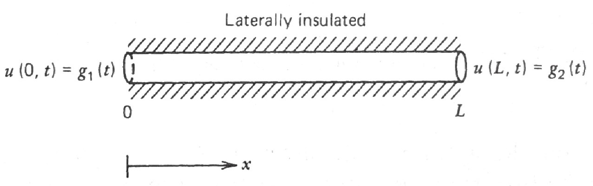

- Of course, we’d have an initial temperature to get this experiment started, but in this case, the effects of our IC would vanish after a short period of time, and the resulting temperature inside the circle would depend on the boundary temperature
Type 2 BC (Flux specified - including the special case of insulated boundaries)
Insulated boundaries are those that do not allow any heat flow to pass, and, hence, the normal derivative (inward or outward) must be zero on the boundary (since the normal derivative is proportional to the flux)
In the case of the one-dimensional rod with insulated ends at \(x=0\) and \(x=L\), the BCs are
\[\begin{array}{r} u_x(0,t) = 0\\ u_x(L,t) = 0 \end{array},\;\; 0 < t <\infty \]
In two-dimensional domains, an insulated boundary would mean that the normal derivative of the temperature across the boundary is zero. For example, if the circular disc insulated on the boundary, then the BC would be
\[u_r(R,\theta,t)=0\; \text{ for } \;0\leq \theta <2\pi\; \text{ and }\;0<t<\infty\]
On the other hand, if we specify the amount of heat entering across the boundary of our disc, the BC is
\[u_r(R,\theta,t)=f(\theta,t)\]
Type 3 BC (Temperature of the surrounding medium specified)
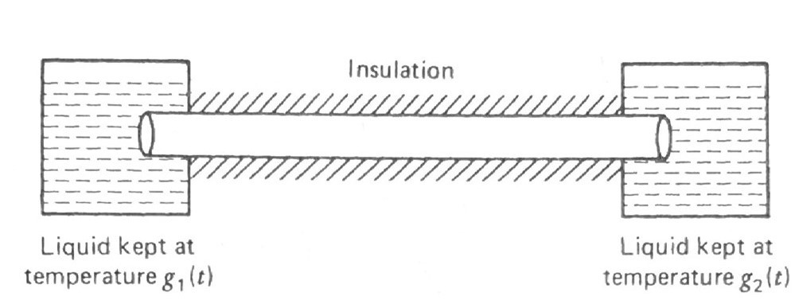
By specifying these types of BCs, \(\,\)we cannot say the boundary temperatures of the rod will be the same as the liquid temperature \(g_1(t)\) and \(g_2(t)\),
but we do know (Newton’s law of cooling) that whenever the rod temperature at one of the boundaries is less than the respective liquid temperatures, \(\,\)then heat will flow into the rod at a rate proportional to this differance
In other words, for the one-dimensional rod with boundaries at \(x=0\) and \(L\), \(\,\)Newton’s law of cooling states:
\[ \text{Outward Flux of Heat (at } x=0\text{) }=h[u(0,t) -g_1(t)] \]
\[ \text{Outward Flux of Heat (at } x=L\text{) }=h[u(L,t) -g_2(t)] \]
where \(\,h\) is a heat transfer coefficient
Fourier’s law gives us another representation for the outward flux of heat. In our one-dimensional problem, \(\,\)Fourier’s law takes the form:
\[ \text{Outward Flux of Heat (at }x=0\text{) } \displaystyle =k\frac{\partial u(0,t)}{\partial x}\]
\[ \text{Outward Flux of Heat (at }x=L\text{) }\displaystyle =-k\frac{\partial u(L,t)}{\partial x}\]
where \(k\) is the thermal conductivity of the material
Finally if we use the two experssions for heat flux, \(\,\)we have our desired BCs in purely mathematical terms;
\[\begin{array}{l} \displaystyle\frac{\partial u(0,t)}{\partial x} = \phantom{-}\frac{h}{k} \left[ u(0,t) -g_1(t) \right]\\[8pt] \displaystyle\frac{\partial u(L,t)}{\partial x} = -\frac{h}{k} \left[ u(L,t) -g_2(t) \right] \end{array},\;\; 0 < t < \infty\]
In higher dimensions, we have similar BCs; for example, if the boundary of a circular disc is interfaced with a moving liquid that has a temperature \(g(\theta,t)\), \(\,\)our BC would be
\[\frac{\partial u}{\partial r}(R,\theta, t)=-\frac{h}{k} \left[ u(R,\theta,t) -g(\theta,t) \right]\]
11.5 Separation of Variables
Separation of variables is one of the oldest techniques for solving initial-boundary-value problems and applies to problems where
The PDE is linear and homogeneous (not necessarily constant coefficients)
The boundary conditions are of the form
\[\begin{aligned} \alpha u_x(0,t) +\beta u(0,t)&= 0\\ \gamma u_x(L,t) +\delta u(L,t)&= 0 \end{aligned}\]
where \(\alpha\), \(\beta\), \(\gamma\), and \(\delta\) are constants (boundary conditions of this form are called linear homogeneous BCs)
We wish to find the function \(u(x,t)\) that satisfies the following four conditions:
\[ \begin{aligned} u_t &= \alpha u_{xx} && 0 < x < L,\; 0 < t < \infty \\ u(0, t) &= 0 && 0 < t < \infty \\ u(L, t) &= 0 && \\ u(x, 0) &= \phi(x) && 0 \leq x \leq L \end{aligned}\]
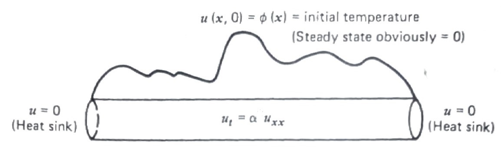
STEP 1 \(\,\) To begin, \(\,\)we look for solutions of the form \(u(x,t)=X(x)T(t)\) by substituting \(X(x)T(t)\) into the PDE
\[ \begin{aligned} X(x)T'(t)&=\alpha X''(x)T(t) \\ &\Downarrow \\ \frac{T'(t)}{\alpha T(t)}&= \frac{X''(x)}{X(x)}=-\lambda <0\\ &\Downarrow {\scriptsize \text{We essentially change a second-order PDE to two ODEs}}\\ T' &+\alpha\lambda T= 0\\ X'' &+\lambda X = 0 \\ &\Downarrow \\ T(t)&=a_1 e^{-\alpha\lambda t}\\ X(x)&=a_2 \sin \sqrt{\lambda}x +a_3 \cos \sqrt{\lambda}x\\ &\Downarrow \\ u(x,t)&=e^{-\alpha\lambda t} \left[ A \sin \sqrt{\lambda}x +B\cos\sqrt{\lambda} x \right] \end{aligned}\]
At this point, \(\,\)we have an infinite number of functions that satisfy the PDE
STEP 2 \(\,\)The next step is to choose a certain subset of our current crop of solutions
\[e^{-\alpha\lambda t} \left[ A \sin \sqrt{\lambda}x +B\cos\sqrt{\lambda} x \right]\; \tag{11.1}\]
that satisfy the boundary conditions
\[ \begin{aligned} u(0,t) &= 0 \\ u(L,t) &= 0 \end{aligned}\]
To do this, \(\,\)we substitute Equation eq-Heat_01 into these BCs, \(\,\)getting
\[ \begin{aligned} u(0,t) & =Be^{-\alpha\lambda t}=0\;\Rightarrow B=0\\ u(L,t) & =Ae^{-\alpha\lambda t}\sin\sqrt{\lambda}L=0 \;\Rightarrow \sin\sqrt{\lambda}L=0,\; A\neq 0 \\ &\Downarrow \\ \lambda &= \left(\frac{\pi}{L}\right)^2, \left(\frac{2\pi}{L}\right)^2,\left(\frac{3\pi}{L}\right)^2,\cdots \\ &\Downarrow \\ \lambda_n &=\left(\frac{n\pi}{L}\right)^2,\;n=1,2,3,\cdots \\ \text{ } \end{aligned}\]
We have now finished the second step; we have an infinite number of functions
\[ u_n(x,t)=c_n e^{-\alpha\left(\frac{n\pi}{L}\right)^2 t} \sin\left( \frac{n\pi}{L}x \right), \;n=1,2,3,\cdots \]
each one satisfying the PDE and the BCs
STEP 3 \(\,\)The last step is to add the fundamental solutions
\[ u(x,t)=\sum_{n=1}^\infty c_n e^{-\alpha\left(\frac{n\pi}{L}\right)^2 t} \sin\left( \frac{n\pi}{L}x \right) \tag{11.2}\]
in such a way (pick the coefficients \(c_n\)) that the initial condition
\[u(x,0)=\phi(x)\]
is satisfied. \(\,\)Substituting the sum into the IC gives
\[ \phi(x)=\sum_{n=1}^\infty c_n \sin\left( \frac{n\pi}{L} x \right) \]
Now the problem becomes how to find the coefficients \(c_n\). \(\,\)This is actually very easy
One uses properties of the functions known as orthogonality:
\[ \int_0^L \sin\left(\frac{m\pi}{L} x \right)\sin\left(\frac{n\pi}{L}x \right)\,dx = \begin{cases} 0 & m\neq n \\ \frac{L}{2} & m=n \end{cases}\]
We multiply each side of Equation eq-Heat_02 by \(\sin(m\pi x/L)\) and integrate from zero to \(L\); \(\,\)we get
\[ \int_0^L \phi(x) \sin \left( \frac{m\pi}{L} x\right)\, dx=c_m\int_0^L \sin^2\left( \frac{m\pi}{L} x\right)\,dx = \frac{L}{2}c_m \]
We’re done; \(\,\)the solution is
\[ u(x,t)=\sum_{n=1}^\infty c_n e^{-\alpha\left(\frac{n\pi}{L}\right)^2 t} \sin\left( \frac{n\pi}{L}x \right)\;\;\text{ where }\; c_n =\frac{2}{L} \int_0^L \phi(x) \sin \left( \frac{n\pi}{L} x\right)\, dx \]
NOTES
Observe that the only difference between the Fourier sine expansion of \(\phi(x)\) and the solution is the insertion of the time factor
\[ e^{-\alpha\left(\frac{n\pi}{L}\right)^2 t} \]
in each term
The terms in the series get small very fast due to the factor \(e^{-\alpha\left(\frac{n\pi}{L}\right)^2 t}\). \(\,\)Hence, for long time periods, \(\,\)the solution is approximately equal to the first term
\[ u(x,t)\approx c_1 e^{-\alpha\left(\frac{\pi}{L}\right)^2 t} \sin\left( \frac{\pi}{L}x \right) \]
\(~\)
Example \(\,\)Solve the diffusion problem with insulated boundaries; \(\,\) that is
\[\begin{aligned} u_t & = u_{xx} && 0 < x < 1,\; 0 < t < \infty\\ u_x(0,t) & = 0 && 0 < t <\infty\\ u_x(1,t) & = 0 && \\ u(x,0) & = 1 + \cos\pi x +0.5\cos 3\pi x && 0 \leq x \leq 1 \end{aligned}\]
\(~\)
11.6 Transforming Nonhomogeneous BCs into Homogeneous Ones
Consider heat flow in an insulated rod where the two ends are kept at constant temperatures \(k_1\) and \(k_2\):
\[\begin{array} {r} u(0,t) = k_1\\ u(L,t) = k_2 \end{array}, \qquad\quad 0<t<\infty \tag{11.3}\]
The difficulty here is that since the BCs are not homogeneous, \(\,\)we cannot solve this problem by separation of variables
However, \(\,\)it is obvious that the solution will have a steady-state solution (when \(t=\infty\)) that varies linearly between the boundary temperatures \(k_1\) and \(k_2\)

In other words, \(\,\)it seems reasonable to think of our temperature \(u(x,t)\) as the sum of two parts
\[ \begin{aligned} u(x,t) &=\underbrace{\text{steady state}}_{\text{Eventual Solution for Large Time}} +\underbrace{\text{transient}}_{\underset{\text{(and will go to zero)}}{\text{Part of the Solution that depends on the IC}}}\\ &\Downarrow \\ &= \left[ k_1 +\frac{x}{L}(k_2 -k_1) \right] +U(x,t) \end{aligned}\]
By substituting the above relation in the original problem Equation eq-Heat_nh, \(\text{ }\)we arrive at a new problem in \(U(x,t)\):
\[{U_t = \alpha U_{xx},\quad 0 < x < L,\; 0 < t < \infty} \]
\[{\scriptsize\color{blue}{\begin{array}{r} U(0,t)=0 \\ U(L,t)=0 \end{array}, \;\; 0<t<\infty}, \;\; U(x,0)=\phi(x) -\left[ k_1 +\displaystyle\frac{x}{L}(k_2 -k_1) \right] =\bar{\phi}(x), \;\; 0\leq x \leq L}\]
Transforming Time Varying BCs to Zero BCs
What about more realistic-type derivative BCs with time-varying right-hand sides? Consider the typical problem
\[ \begin{aligned} u_t &= \alpha u_{xx} && 0 < x < L, \;0 < t <\infty \\ u(0,t) &= g_1(t) && 0 < t < \infty \\ u_x(L,t) +hu(L,t) &= g_2(t) && \\ u(x,0) &=\phi(x) && 0 \leq x \leq L \end{aligned} \tag{11.4}\]
To change these nonezero BCs to homogeneous ones, \(\,\)we (after some trial and error) seek a solution of the form:
\[ u(x,t)=\underbrace{A(t)\left[1-\frac{x}{L}\right] +B(t)\frac{x}{L}}_{S(x,t)}+U(x,t)\]
where \(A(t)\) and \(B(t)\) are chosen so that \(S(x,t)\) satisfies the BCs and thus
\[\begin{array}{r} U(0,t) = 0\\ U_x(L,t)+hU(L,t) = 0 \end{array}, \quad 0<t<\infty\]
Substituting \(S(x,t)\) into the BCs gives
\[ \begin{aligned} S(0,t) &= g_1(t)\\ S_x(L,t)+hS(L,t) &= g_2(t) \end{aligned}, \quad 0<t<\infty \]
in which we get
\[\begin{aligned} A(t)&= g_1(t)\\ B(t)&= \frac{g_1(t) +Lg_2(t)}{1+Lh} \end{aligned}, \quad 0<t<\infty\]
So if we substitute this into the original problem Equation eq-Heat_nh2, \(\,\)we get the transformed problem in \(U(x,t)\):
\[ \begin{aligned} U_t &= \alpha U_{xx} -\color{red}{S_t} && 0 < x <L, \;0 < t <\infty \\ U(0,t) &= 0 && 0 < t < \infty\\ U_x(L,t) +hU(L,t) &= 0 && \\ U(x,0) &= \phi(x)-S(x,0) && 0 \leq x \leq L \end{aligned}\]
We now have our new problem with zero BCs but unfortunately the PDE is nonhomogeneous
We cannot solve this problem by separation of variables, \(\,\)but we will solve it by integral transforms and eigenfuction expansions
\(~\)
Example \(\,\)Solve the initial-boundary-value problem
\[ \begin{aligned} u_t &= \alpha u_{xx} && 0 < x < 1, \;0 < t <\infty \\ u(0,t) &= 1 && 0 < t < \infty\\ u_x(1,t) +hu(1,t) &= 1 && \\ u(x,0) &= \sin\pi x +x && 0 \leq x \leq 1 \end{aligned}\]
\(~\)
11.7 Solving More Complicated Problems by Separation of Variables
We start with a one-dimensional heat-flow problem where one of the BCs contains derivatives
Heat-Flow Problem with 3rd kind BC

We fix the temperature at the top of the rod at \(u(0,t)=0\) and immerse the bottom of the rod in a solution of water fixed at the same temperature of zero. The natural flow of heat says that the BC at \(x=1\) is
\[u_x(1,t)=-hu(1,t)\]
Suppose now the initial temperature of the rod is \(u(x,0)=x,\) \(\,\)but instantaneously thereafter (\(t>0\)), \(\,\)we apply our BCs. To find the ensuing temperature, \(\,\)we must solve the IBVP
\[ \begin{aligned} u_t &= \alpha u_{xx} && 0 < x < 1, \;0 < t <\infty \\ u(0,t) &= 0 && 0 < t < \infty\\ u_x(1,t) +hu(1,t) &= 0 && \\ u(x,0) &= x && 0 \leq x \leq 1 \end{aligned}\]
STEP 1
Substituting \(u(x,t)=X(x)T(t)\) into the PDE gives
\[u(x,t)=e^{-\alpha\lambda t} \left[ A\sin\sqrt{\lambda}x +B\cos\sqrt{\lambda}x \right]\]
for any \(\lambda>0\) and any \(A\) and \(B\)
STEP 2
Substituting the solution into the BCs gives us conditions on \(\lambda\), \(A\) and \(B\) \(\,\)that must be satisfied;
\[ \begin{aligned} B e^{-\alpha\lambda t}&= 0\; \Rightarrow \; B=0 \\ A e^{-\alpha\lambda t}(\sqrt{\lambda} \cos \sqrt{\lambda} +h\sin\sqrt{\lambda})&= 0 \;\Rightarrow \; \tan \sqrt{\lambda} =-\frac{\sqrt{\lambda}}{h}, \; A \neq 0 \end{aligned}\]
To find \(\lambda\), \(\,\)we must find the intersections of the curves \(\tan\sqrt{\lambda}\) and \(-\frac{\sqrt{\lambda}}{h}\). \(\,\)These values \(\lambda_1\), \(\lambda_2\), \(\cdots\) \(\,\)can be computed numerically for a given \(h\) and are called the eigenvalues of the boundary-value problem
\[\begin{aligned} X''+\lambda X &= 0 \\ X(0)&=0 \\ X'(1)+hX(1)&=0 \end{aligned} \tag{11.5}\]
The eigenvalue problem Equation eq-Heat_complex is a special case of the general Sturm-Liouville problem
\(~\)
def calc_eig(h, n_eig):
return np.array([optimize.brentq(lambda x: np.tan(x) +x/h,
(i +0.5001)*np.pi, (i +1)*np.pi) for i in range(n_eig)])
h = 1
n_eig = 5
sqrt_eig = calc_eig(h, n_eig)
example_plot(h, n_eig, sqrt_eig)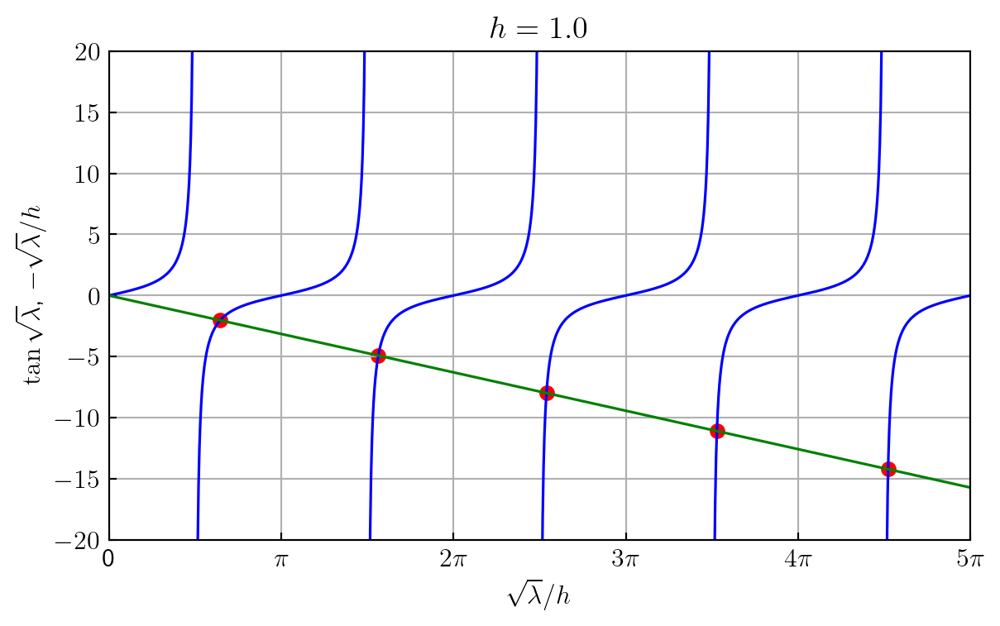
for i in range(n_eig):
print(rf'$$ \lambda_{i +1} = {np.round(sqrt_eig[i], 2)} $$')\[ \lambda_1 = 2.03 \] \[ \lambda_2 = 4.91 \] \[ \lambda_3 = 7.98 \] \[ \lambda_4 = 11.09 \] \[ \lambda_5 = 14.21 \]
\(~\)
The solutions of Equation eq-Heat_complex corresponding to the eigenvalues \(\lambda_n\) are called eigenfunctions \(X_n(x)\)
\[ X_n(x)=\sin\sqrt{\lambda_n} x \]
\(~\)
def example_plot2(x, n_eig, sqrt_eig, eigfunc):
plt.figure(figsize=(7, 4))
for n in range(n_eig):
plt.plot(x, eigfunc(x, sqrt_eig[n]), label=rf'$X_{n +1}(x)$')
plt.xlim(0, 1)
plt.ylim(-1.2, 1.2)
plt.grid(ls=':')
plt.legend(loc='upper left', bbox_to_anchor=(0, -0.1))
plt.xlabel('$x$')
plt.ylabel('$X_n(x)$')
plt.title(r'$X_n(x)=\sin\sqrt{\lambda_n} x$')
plt.show()def eigfunc(x, sqrt_eig):
return np.sin(sqrt_eig *x)
x = np.linspace(0, 1, 150)
example_plot2(x, n_eig, sqrt_eig, eigfunc)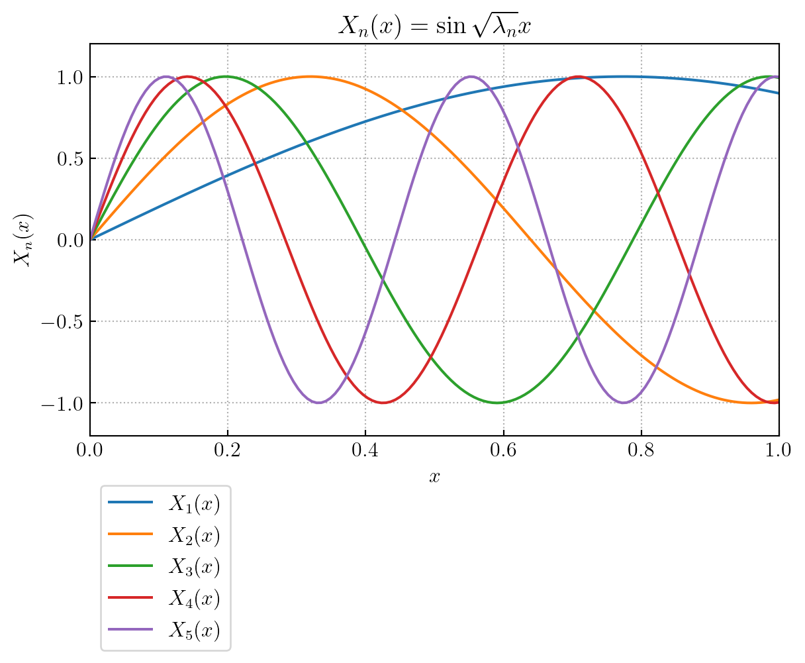
\(~\)
STEP 3
We now have an infinite number of solutions
\[u_n(x,t)=e^{-\alpha\lambda_n t} \sin\sqrt{\lambda_n}x\]
each one satisfying the PDE and the BCs. \(\,\)The final step is to add these functions together (the sum will still satisfy the PDE and BCs, since both the PDE and BCs are linear and homogeneous)
\[ u(x,t)=\sum_{n=1}^\infty c_n e^{-\alpha\lambda_n t} \sin\sqrt{\lambda_n}x \]
in such a way that they agree with the IC
\[ u(x,0)=x=\sum_{n=1}^\infty c_n \sin\sqrt{\lambda_n}x \]
To find the coefficients \(c_n\), \(\,\)we must multiply each side of the equation by \(\sin\sqrt{\lambda_m}x\) and integrate \(x\) from \(0\) to \(1\)
\[{\scriptsize \begin{aligned} \int_0^1 x\sin\sqrt{\lambda_m}x\,dx&= \sum_{n=1}^\infty c_n \int_0^1 \sin\sqrt{\lambda_n}x\,\sin\sqrt{\lambda_m}x \,dx\\ &\Downarrow \\ \frac{\sin\sqrt{\lambda_m}-\sqrt{\lambda_m}\cos\sqrt{\lambda_m}}{\lambda_m}&=c_m \int_0^1 \sin^2\sqrt{\lambda_m}x\,dx =c_m\left[ \frac{\sqrt{\lambda_m}-\sin\sqrt{\lambda_m}\cos\sqrt{\lambda_m}}{2\sqrt{\lambda_m}} \right ] \\ &\Downarrow\\ c_n&=\frac{2}{\sqrt{\lambda_n}} \left[\frac{\sin\sqrt{\lambda_n} -\sqrt{\lambda_n}\cos\sqrt{\lambda_n}}{\sqrt{\lambda_n}-\sin\sqrt{\lambda_n}\cos\sqrt{\lambda_n}} \right] \end{aligned}}\]
In this problem, \(\,\)the first five constants \(c_n\) have been computed:
def cal_c_n(sqrt_eig):
sin_sqrt_eig = np.sin(sqrt_eig)
cos_sqrt_eig = np.cos(sqrt_eig)
return (2.0 /sqrt_eig
*(sin_sqrt_eig -sqrt_eig *cos_sqrt_eig)
/(sqrt_eig -sin_sqrt_eig *cos_sqrt_eig))
c_n = cal_c_n(sqrt_eig)
print('$,\;\;$'.join([rf'$c_{i} = {c_i: 6.4f}$'
for i, c_i in enumerate(c_n, 1)]))\(c_1 = 0.7292\)\(,\;\;\)\(c_2 = -0.1562\)\(,\;\;\)\(c_3 = 0.0614\)\(,\;\;\)\(c_4 = -0.0322\)\(,\;\;\)\(c_5 = 0.0197\)
def example_plot3(alpha, t, x, n_eig, sqrt_eig, eigfunc, u_solution):
plt.figure(figsize=(7, 4))
plt.plot(x, x, 'r:', label='$t=0.0$')
for tt in t:
plt.plot(x, u_solution(alpha, tt, x, n_eig, sqrt_eig, eigfunc),
label='$t=%0.1f$' % tt)
plt.xlim(0, 1)
plt.ylim(0, 1)
plt.legend(loc='upper left')
plt.xlabel('$x$')
plt.ylabel('$u(x,t)$')
plt.show() def u_solution(alpha, t, x, n_eig, sqrt_eig, eigfunc):
u = 0
for i in range(n_eig):
u += c_n[i] *np.exp(-alpha *sqrt_eig[i]**2 *t) \
*eigfunc(x, sqrt_eig[i])
return u
alpha = 1
t = np.linspace(0.1, 0.5, 4)
example_plot3(alpha, t, x, n_eig, sqrt_eig, eigfunc, u_solution)
11.8 Transforming Hard Equations into Easier Ones
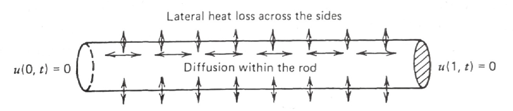
Consider the following problem:
\[ \begin{aligned} u_t &= \alpha u_{xx} \color{blue}{-\beta u} && 0 < x < 1, \;0 < t <\infty \\ u(0,t) &= 0 && 0 < t < \infty\\ u(1,t) &= 0 && \\ u(x,0) &= \phi(x) && 0 \leq x \leq 1 \end{aligned} \tag{11.6}\]
where the term \(-\beta u\) represents heat flow across the lateral boundary
We introduce a new temperature \(w(x,t)\) in place of \(u(x,t)\), \(\,\)so that the PDE in \(w\) is simpler than the original one
The transformation is generally based on an intuitive feeling of how the solution of the original PDE behaves
In our problem Equation eq-Heat_lateral, \(\,\)the temperature \(u(x,t)\) at any point \(x_0\) is changing as a result of two phenomena
- diffusion of heat within the rod due to \(\alpha u_{xx}\)
- heat flow across the lateral boundary due to \(-\beta u\)
The important point is that if there were no diffusion within the rod (\(\alpha=0\)) then the temperature at each point \(x_0\) would dump exponentially to zero according to
\[u(x_0,t)=u(x_0,0) e^{-\beta t}\]
By means of this observation, \(\,\)we can essentially decompose the temperature \(u(x,t)\) into two factors
\[u(x,t)=e^{-\beta t} w(x,t)\]
where \(w(x,t)\) would represent the temperature due to diffusion only
When we substitute this expression into Equation eq-Heat_lateral, \(\,\)we arrive at
\[ \begin{aligned} w_t &= \alpha w_{xx} && 0 < x < 1, \;0 < t <\infty \\ w(0,t) &= 0 && 0 < t < \infty\\ w(1,t) &= 0 && \\ w(x,0) &= \phi(x) && 0 \leq x \leq 1 \end{aligned}\]
The diffusion-convection equation
\[u_t=\alpha u_{xx}-vu_x\]
(\(v\) is a constant) can also be transformed to
\[w_t=\alpha w_{xx}\]
In this case, \(\,\)the transformation is
\[ u(x,t)=\exp\left[ \frac{v}{2\alpha} \left(x -\frac{v}{2}t\right) \right] w(x,t)\]
\(~\)
Example \(\,\) Solve the diffusion-convection problem \[ \begin{aligned} u_t &= u_{xx} -u_x && 0 < x < 1, \;0 < t <\infty \\ u(0,t) &= 0 && 0 < t < \infty\\ u(1,t) &= 0 && \\ u(x,0) &= e^{x/2} && 0 \leq x \leq 1 \end{aligned}\]
by transforming it into an easier one
\[ \begin{aligned} w_t &= w_{xx} && 0 < x < 1, \;0 < t <\infty \\ w(0,t) &= 0 && 0 < t < \infty\\ w(1,t) &= 0 && \\ w(x,0) &= 1 && 0 \leq x \leq 1 \end{aligned}\]
Solution
\[\begin{aligned} u(x,t)&=\exp\left[ \frac{1}{2}\left( x -\frac{1}{2}t \right ) \right] w(x,t) \\ &\Downarrow \\ w_t=w_{xx},\; w(0,t)&=0,\;w(1,t)=0,\;w(x,0)=1 \\ &\Downarrow \\ w(x,t)&=2\sum_{n=1}^\infty \frac{1-(-1)^n}{n\pi} e^{-n^2\pi^2 t}\sin n\pi x \\ &\Downarrow \\ u(x,t)&= 2\sum_{n=1}^\infty \frac{1-(-1)^n}{n\pi} e^{-n^2\pi^2 t +\frac{1}{2}\left( x-\frac{1}{2}t \right )}\sin n\pi x \\ &=4\sum_{m=1}^\infty \frac{1}{(2m-1)\pi} e^{-(2m-1)^2\pi^2 t +\frac{1}{2}\left( x-\frac{1}{2}t \right )}\sin (2m-1)\pi x \end{aligned}\]
\(~\)
def example_plot4(t, x, n_terms, u_solution):
plt.figure(figsize=(6, 4))
plt.plot(x, np.exp(x /2.0), 'r:', label='$t=0$')
for tt in t:
plt.plot(x, u_solution(tt, x, n_terms), label='$t=%0.3f$' % tt)
plt.xlim(0, 1)
plt.ylim(0, 2)
plt.legend(loc='upper left', bbox_to_anchor=(1.0, 1.0))
plt.xlabel('$x$')
plt.ylabel('$u(x,t)$')
plt.title(r'$\alpha=1,\;v=1$')
plt.show() def u_solution(t, x, n_terms):
u = 0
for m in range(1, n_terms +1):
a = (2.0 *m -1.0) *np.pi
u += 1 /a *np.exp(-a *a *t +(x -t /2.0) /2.0) *np.sin(a *x)
return 4.0*u
x = np.linspace(0, 1, 150)
t = np.array([0.001, 0.002, 0.004, 0.008, 0.05, 0.10, 0.15, 0.20])
n_terms = 25
example_plot4(t, x, n_terms, u_solution)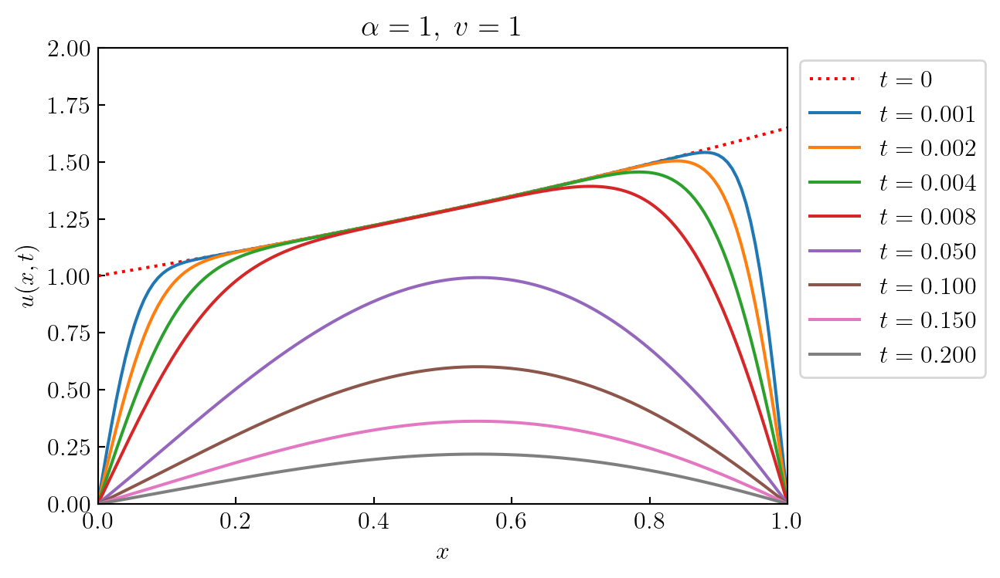
\(~\)
11.9 Solving Nonhomogeneous PDEs (Eigenfunction Expansion)
Consider the nonhomogeneous problem
\[ \begin{aligned} u_t &= \alpha u_{xx} +f(x,t) && 0 < x < 1, \;0 < t <\infty \\ u(0,t) &= 0 && 0 < t < \infty\\ u(1,t) &= 0 && \\ u(x,0) &= \phi(x) && 0 \leq x \leq 1 \end{aligned} \tag{11.7}\]
The purpose of this section is to solve this problem by a method that is analogous to the method of variation of parameters in ODEs and is known as the eigenfunction expansion
STEP 1
The basic idea in this method is to decompose the heat source \(f(x,t)\) into simple components
\[ f(x,t)=\sum_{n=1}^\infty f_n(t) X_n(x)\]
It turns out that the \(X_n(x)\) are the eigenfunctions of the Sturm-Liouville system we get when solving the associated homogeneous system by separation of variables
In this case, \(\,\)the Sturm-Liouville problem we find when separating variables is
\[\begin{aligned} &X'' +\lambda X =0 \\ &X(0)=0 \\ &X(1)=0 \end{aligned}\]
and, \(\,\)hence, \(\,\)the \(X_n(x)\) are
\[X_n(x)=\sin n\pi x,\;n=1,2,3,\cdots\]
Finally, \(\,\) to find the functions \(\,f_n(t)\), \(\,\)we merely multiply each side of this equation by \(\sin m\pi x\,\) and integrate from zero to one:
\[\begin{aligned} \int_0^1 f(x,t) \sin m\pi x \,dx&= \sum_{n=1}^\infty f_n(t) \int_0^1 \sin m\pi x\, \sin n\pi x \,dx=\frac{1}{2}f_m(t)\\ &\Downarrow\;{\scriptsize\text{changing}\;m \;\text{to}\; n} \\ f_n(t)&=2\int_0^1 f(x,t) \sin n\pi x\, dx \end{aligned}\]
STEP 2
The responses \(u_n(x,t)=T_n(t) \sin n\pi x\,\) to each of these individual components \(\,f_n(t)\sin n\pi x\,\) are added to construct the solution of our problem:
\[ u(x,t)=\sum_{n=1}^\infty u_n(x,t)=\sum_{n=1}^\infty T_n(t) \sin n\pi x \]
Substituting \(u(x,t)\) and \(f(x,t)\) into Equation eq-Heat_ee gives us
\[{\scriptsize \begin{aligned} \sum_{n=1}^\infty T_n'(t) \sin n\pi x&=-\alpha \sum_{n=1}^\infty (n\pi)^2\, T_n(t) \sin n\pi x +\sum_{n=1}^\infty f_n(t) \sin n\pi x \\ \sum_{n=1}^\infty T_n(0)\sin n\pi x&=\phi(x) \\ &\Downarrow \\ \sum_{n=1}^\infty\underbrace{\left[ T_n'+\alpha(n\pi)^2\,T_n -f_n(t) \right ]}_{=0}\,&\sin n\pi x= 0 \\ T_n(0)=2\int_0^1 \phi(x)&\sin n\pi x\,dx=a_n \\ &\Downarrow \\ T_n(t)=a_n e^{-\alpha(n\pi)^2 t}&+\int_0^t e^{-\alpha(n\pi)^2(t-\tau)} f_n(\tau)\,d\tau \end{aligned}}\]
Hence, the solution of our problem Equation eq-Heat_ee is
\[{\scriptsize \begin{aligned} u(x,t)&=\sum_{n=1}^\infty T_n(t) \sin n\pi x =\underbrace{\sum_{n=1}^\infty a_n e^{-\alpha(n\pi)^2 t}\sin n\pi x }_{\text{Transient Part due to the IC}}+\underbrace{\sum_{n=1}^\infty \int_0^t e^{-\alpha(n\pi)^2(t-\tau)} f_n(\tau)\,d\tau \cdot \sin n\pi x}_{\text{Forcing Part due to}\, f(x,t)} \end{aligned}}\]
The eigenfunctions \(X_n(x)\) in the expansion change from problem to problem and depend on the PDE and BCs
\(~\)
Example \(\,\)Find the solution
\[ \begin{aligned} u_t &= u_{xx} +\sin\sqrt{\lambda_1} x && 0 < x < 1, \;0 < t <\infty \\ u(0,t) &= 0 && 0 < t < \infty\\ u_x(1,t) +hu(1,t) &= 0 && \\ u(x,0) &= 0 && 0 \leq x \leq 1 \end{aligned}\]
where \(\lambda_1\) is the first root of the equation \(\,\) \(\tan\sqrt{\lambda}=-\sqrt{\lambda}\)
\(~\)
11.10 \(~\)The Finite Sine and Cosine Transforms
An integral transformation is merely a transformation that assigns to one function \(f(t)\) a new function \(F(s)\) by means of a formula like
\[ F(s)=\int_a^b K(s,t) \,f(t)\,dt \]
Note that we start with a function of \(t\) and end with a function of \(s\)
The function \(K(s,t)\) is called the kernel of the transformation and is the major ingredient that distinguishes one transform from another; \(\,\) it is chosen so that the transform has certain desirable properties. The limits \(a\) and \(b\) also change from transformation to transformation
With every integral transform, there is an inverse transform that will reproduce that original function from its transform. \(\,\)The transform and its inverse together form what is called a transform pair
The general philosophy behind integral transformation is that they eliminate partial derivatives with respect to one of the variables; \(\,\)hence, \(\,\)the new equation has one less variable
In other words, integral transformations change problems into easier ones. \(\,\)The transformed problem is then solved, and its inverse is obtained to find the solution to the original problem
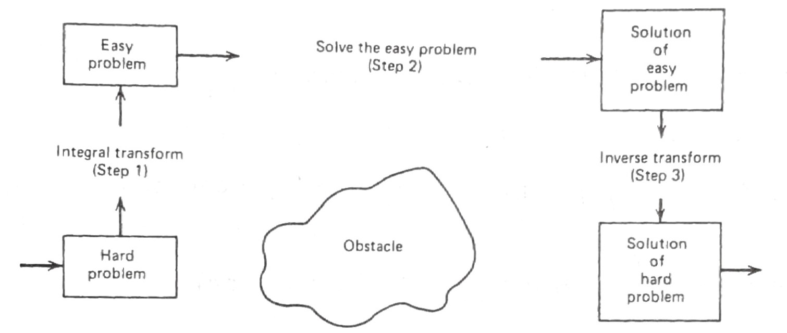
We first start with a function \(f(x)\) defined on an interval \([0,L]\). \(\,\)The finite sine and cosine transforms of this function are defined by
\[\begin{aligned} \mathcal{F}_s[f]&=\frac{2}{L} \int_0^L f(x)\,\sin\frac{n\pi x}{L} \,dx =b_n &&\;{\scriptsize\text{Finite Sine Transform}} \\[8pt] \mathcal{F}_c[f]&=\frac{2}{L} \int_0^L f(x)\,\cos\frac{n\pi x}{L} \,dx =a_n &&\;{\scriptsize\text{Finite Cosine Transform}} \end{aligned}\]
The student will note that these transforms do nothing more than transform a function into the Fourier sine and cosine coefficients. \(\,\)The inverse transform of these transforms are the Fourier sine and cosine series
\[\begin{aligned} f(x) &=\sum_{n=1}^{\infty} b_n \sin\frac{n\pi x}{L} &&\;{\scriptsize\text{Inverse Sine Transform}} \\ f(x) &= \frac{a_0}{2} +\sum_{n=1}^\infty a_n \cos \frac{n\pi x}{L} &&\;{\scriptsize\text{Inverse Cosine Transform}} \end{aligned}\]
Note that the summation in the inverse cosine starts at \(n=0\), \(\,\)while the inverse sine starts at \(n=1\)
\(~\)
Examples of the Sine Transform
\[\begin{aligned} f(x)&=1, \;\;\;\; 0 \leq x \leq 1 \\ &\Downarrow \\ \scriptsize b_n=2 \int_0^1 \sin n\pi x \,dx &\scriptsize= \begin{cases} \;\;\;\;0& n\; \text{ even} \\ \;^{\displaystyle 4}/_{\displaystyle n\pi}& n\; \text{ odd } \end{cases} \\ &\Downarrow \\ f(x)&=\frac{4}{\pi} \sum_{n=1}^\infty \left[ \frac{1}{2n-1} \right] \sin (2n-1)\pi x \end{aligned}\]
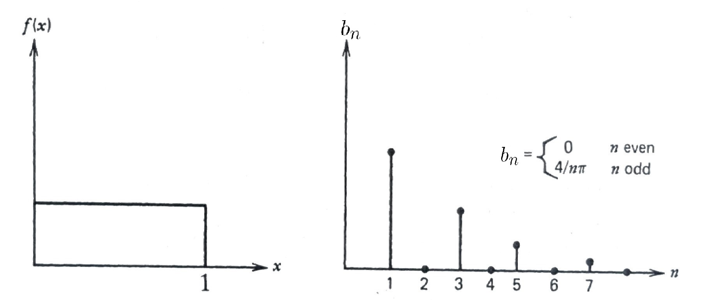
\(~\)
Properties of the Finite Sine and Cosine Transforms
\[\begin{aligned} \mathcal{F}_s [u_t] &= \frac{d \mathcal{F}_s [u]}{dt} \\ \mathcal{F}_s [u_{tt}] &= \frac{d^2 \mathcal{F}_s [u]}{dt^2} \\ \\ \mathcal{F}_s [u_x] &= -\frac{n\pi}{L} \mathcal{F}_c [u] \\ \color{red}{\mathcal{F}_s [u_{xx}]} &\color{red}{\:= -\left( \frac{n\pi}{L} \right)^2 \mathcal{F}_s [u] +\frac{2n\pi}{L^2} \left[ u(0,t) -(-1)^n u(L,t) \right]}\\ \mathcal{F}_c [u_x] &= -\frac{n\pi}{L} \mathcal{F}_s [u] +\frac{2}{L} \left[(-1)^n u(L,t) -u(0,t) \right] \\ \color{red}{\mathcal{F}_c [u_{xx}]} & \color{red}{\:= -\left(\frac{n\pi}{L}\right)^2 \mathcal{F}_c [u] +\frac{2}{L} \left[(-1)^n u_x(L,t) -u_x(0,t) \right]} \\ \end{aligned}\]
\(~\)
Example \(\,\)Solve the general problem
\[ \begin{aligned} u_t &= \alpha u_{xx} -\beta u +f(x,t) && 0 < x < 1, \;0 < t <\infty \\ u(0,t) &= 0 && 0 < t < \infty\\ u(1,t) &= 0 && \\ u(x,0) &= 0 && 0 \leq x \leq 1 \end{aligned}\]
\(~\)
11.11 \(~\)Superposition (The Backbone of Linear Systems)
For an engineer who wishes to find the response \(u\) to a linear system from input \(\,f\), \(\,\)a common approach is
- Break \(\,f\) into elementary parts, \(\,f=\sum f_k\)
- Find the system response \(u_k\) to \(f_k\)
- Add(superimpose) the simple responses \(u_k\) to get \(\,u=\sum u_k\)
It turns out if the system is linear, \(\,\)then the sum \(u\) is the response we get if the function \(\,f\) were imputted directly; \(\,\)this is the principle of superposition
Superposition Used to Break an IBVP into Two Simpler Problems
Suppose we have the linear problem
\[ \begin{aligned} u_t &= u_{xx} +\color{red}{\sin \pi x} && 0 < x < 1, \;0 < t <\infty \\ u(0,t) &= 0 && 0 < t < \infty\\ u(1,t) &= 0 && \\ u(x,0) &= \sin 2\pi x && 0 \leq x \leq 1 \end{aligned}\tag{P}\label{eq:P}\]
Here, \(\,\)we have an nonhomogeneous heat equation, \(\,\)so separation of variables is not a viable method of attack
We could, \(\,\)of course, \(\,\)use the finite sine transform on the variable \(x\) or the Laplace transform on \(t\), \(\,\)but still another idea would be to consider two subproblems
\[ \begin{aligned} u_t &= u_{xx} +\color{red}{\sin \pi x} && 0 < x < 1, \;0 < t <\infty \\ u(0,t) &= 0 && 0 < t < \infty\\ u(1,t) &= 0 && \\ u(x,0) &= 0 && 0 \leq x \leq 1 \end{aligned}\tag{A}\label{eq:A}\]
\[\text{and} \qquad\qquad\qquad\]
\[ \begin{aligned} u_t &= u_{xx} && 0 < x < 1, \;0 < t <\infty \\ u(0,t) &= 0 && 0 < t < \infty\\ u(1,t) &= 0 && \\ u(x,0) &= \color{red}{\sin 2\pi x} && 0 \leq x \leq 1 \end{aligned}\tag{B}\label{eq:B}\]
There two problems can be solved individually with a little effort, \(\,\)and it should be clear here that the sum of the solutions to \(\eqref{eq:A}\) and \(\eqref{eq:B}\) is the solution to the original problem \(\eqref{eq:P}\); \(\,\)that is
\[u(x,t)=\underbrace{\frac{1}{\pi^2} (1 -e^{-\pi^2 t}) \sin\pi x}_{\text{Solution to \eqref{eq:A}}} +\underbrace{e^{-(2\pi)^2 t} \sin 2\pi x}_{\text{Solution to \eqref{eq:B}}}\]
Separation of Variables and Integral Transforms as Superpositions
In separation of variables, \(\,\)we generally break down the initial conditions into an infinite number of simple parts and find the response to each part. \(\,\)We then sum these individual responses to find the solution to the problem
On the other hand, \(\,\)integral transforms also use superposition, \(\,\)for instance, \(\,\)let’s show how the finite sine transform uses this principle. \(\,\)Consider the nonhomogeneous heat equation
\[ \begin{aligned} u_t &= u_{xx} +f(x,t) && 0 < x < 1, \;0 < t <\infty \\ u(0,t) &= 0 && 0 < t < \infty\\ u(1,t) &= 0 && \\ u(x,0) &= 0 && 0 \leq x \leq 1 \end{aligned}\]
and its solution by use of the finite sine transform. \(\,\)What we’re really doing is resolving the input \(f(x,t)\) into components, \(\,\)finding the response \(U_n\) due to each component, \(\,\)and adding these responses
\[{ \begin{aligned} u_t &= u_{xx} +f(x,t)\\ &\Downarrow\,{\scriptstyle \text{finite sine transform,}} \; {\scriptstyle u(0,t) = u(1,t) =0} \\ \sum_{n=1}^\infty &\left[ U_n' +(n\pi)^2 U_n -F_n(t) \right] \sin n\pi x =0 \\ &\Downarrow \, {\scriptstyle u(x,0)=0}\\ U_n'(t) &+(n\pi)^2 U_n(t) =F_n(t), \;\; U_n(0) =0\;\;\;\;n=1,2,3,\cdots \\ &\Downarrow \\ U_n(t) &= e^{-(n\pi)^2 t} \int_0^t e^{(n\pi)^2 \tau} F_n(\tau) \,d\tau = \int_0^t e^{-(n\pi)^2 (t -\tau)} F_n(\tau) \,d\tau\\ &\Downarrow \\ u(x,t) &=\sum_{n=1}^\infty U_n(t) \sin n\pi x \end{aligned}}\]
NOTES
In the finite sine transform, \(\,\)the resolutions were infinite series, \(\,\)whereas in most other integral transforms, \(\,\)the resolutions are integrals (continuous resolutions)
\(~\)
Example \(\,\)Find four initial-boundary-value problems whose solutions sum to the solution of the following problem:
\[ \begin{aligned} u_t &= u_{xx} +f(x,t) && 0 < x < 1, \;0 < t <\infty \\ u(0,t) &= g_1(t) && 0 < t < \infty\\ u(1,t) &= g_2(t) && \\ u(x,0) &= \pi(x) && 0 \leq x \leq 1 \end{aligned}\]
\(~\)
Example \(\,\)Solve the problem
\[ \begin{aligned} u_t &= u_{xx} +\sin 3\pi x && 0 < x < 1, \;0 < t <\infty \\ u(0,t) &= 0 && 0 < t < \infty\\ u(1,t) &= 1 && \\ u(x,0) &= \sin \pi x && 0 \leq x \leq 1 \end{aligned}\]
\(~\)
11.12 \(~\)The Fourier Integral and Transform
An integral transformation can be thought of as a resolution of a function into a certain spectrum of components:
Let’s consider the resolution of a periodic function \(f(x)\) into Fourier series
\[ f(x)= \frac{a_0}{2} +\sum_{n=1}^\infty \left[ a_n\cos \frac{n\pi x}{L} +b_n \sin \frac{n\pi x}{L} \right] \]
Here the coefficients \(a_n\) and \(b_n\) represent the amount of the function \(f(x)\) made up \(\displaystyle\cos \frac{n\pi x}{L}\) and \(\displaystyle\sin \frac{n\pi x}{L}\), \(\,\)respectively
While the square root
\[\sqrt{a_n^2 +b_n^2}\]
(called the spectrum of the function) measures the amount of \(\,f(x)\) with frequency \(\displaystyle\frac{n\pi}{L}\)
Functions that are periodic can be resolved into infinite series (they have discrete spectrums)
Of course, \(\,\)if a function is defined only on a finite interval, \(\,\)we could extend the function outside the interval in a periodic way, \(\,\)so that a Fourier series representation could be obtained for the function inside the interval
Whereas functions that are not periodic must be resolved into a continuous spectrum of values
Although a nonperiodic function \(f(x)\) cannot be represented by an infinite series of sines and cosines, \(\,\)we might write it as continuous analog of the Fourier series:
\[{\scriptsize \begin{aligned} f(x)&= \frac{a_0}{2} +\sum_{n=1}^\infty \left[ a_n\cos \frac{n\pi x}{L} +b_n \sin \frac{n\pi x}{L} \right] \\ &= {\tiny \frac{1}{2L} \int_{-L}^L f(\xi)\,d\xi +\frac{1}{L} \sum_{n=1}^\infty \left[ \left( \int_{-L}^L f(\xi) \cos\frac{n\pi\xi}{L}\,d\xi \right) \cos \frac{n\pi x}{L} +\left( \int_{-L}^L f(\xi) \sin\frac{n\pi\xi}{L}\,d\xi \right) \sin \frac{n\pi x}{L} \right] }\\ &\Downarrow\; {\tiny \omega_n =\frac{n\pi}{L}, \;\Delta\omega=\omega_{n+1} -\omega_n=\frac{\pi}{L}}\\ &= {\tiny \frac{1}{2\pi} \left( \int_{-L}^L f(\xi)\,d\xi\right)\Delta \omega +\frac{1}{\pi} \sum_{n=1}^\infty \left[ \left( \int_{-L}^L f(\xi) \cos\omega_n\xi\,d\xi \right) \cos \omega_n x +\left( \int_{-L}^L f(\xi) \sin\omega_n \xi\,d\xi \right) \sin\omega_n x \right]\Delta \omega }\\ &\Downarrow\;{\tiny L \to \infty,\;\Delta \omega \to 0,\; \lim_{\Delta\omega \to 0} \sum_{n=1}^\infty F(\omega_n)\,\Delta\omega=\int_0^\infty F(\omega)\,d\omega }\\ \color{red}{f(x)} \,&\color{red}{ =\int_0^\infty \left[ a(\omega) \cos\omega x +b(\omega)\sin\omega x \right]\,d\omega} \\ &\color{blue}{a(\omega)=\frac{1}{\pi} \int_{-\infty}^\infty f(x)\cos \omega x\, dx} \\ &\color{blue}{b(\omega)=\frac{1}{\pi} \int_{-\infty}^\infty f(x)\sin \omega x\, dx} \end{aligned}}\]
where the functions \(a(\omega)\) and \(b(\omega)\) are known as the Fourier cosine and sine transforms and measure the cosine and sine component of \(\,f(x)\) and
\[\color{red}{\sqrt{a^2(\omega) +b^2(\omega)}}\]
measures the \(\omega\) frequency component of \(f(x)\) and is called the spectrum of \(f(x)\). \(\,\)With this intutive explanation of the spectrum of a function, \(\,\)we now get to the nuts and bolts of integral transforms
The Exponential Fourier Transform
We are now in a position to define what is generally known as the exponential Fourier transfrom:
\[{\scriptsize \begin{aligned} f(x) &=\frac{1}{\pi} \int_0^\infty \int_{-\infty}^\infty f(\xi)\left[ \cos\omega\xi \cos\omega x +\sin\omega \xi \sin\omega x \right]\,d\xi\,d\omega \\ &={\scriptsize \frac{1}{\pi} \int_0^\infty \int_{-\infty}^\infty f(\xi) \underbrace{\color{blue}{\cos\omega(\xi -x)}}_{\cos\omega(x-\xi) \; - \;\text{even function w.r.t. }\omega } \,d\xi\,d\omega }\\ &{\tiny = \frac{1}{2\pi} \int_{-\infty}^\infty \int_{-\infty}^\infty f(\xi) \cos\omega(x -\xi) \,d\xi\,d\omega } {\tiny = \frac{1}{2\pi} \int_{-\infty}^\infty \int_{-\infty}^\infty f(\xi) \left[ \cos\omega(x -\xi) +\color{blue}{i\sin\omega(x -\xi)} \right]\,d\xi\,d\omega }\\ &={\scriptsize \frac{1}{2\pi} \int_{-\infty}^\infty \int_{-\infty}^\infty f(\xi) e^{i\omega (x -\xi)} \,d\xi\,d\omega }\\ &=\frac{1}{\sqrt{2\pi}} \int_{-\infty}^\infty \left[ \color{red}{\frac{1}{\sqrt{2\pi}}\int_{-\infty}^\infty f(\xi) e^{-i\omega \xi} \,d\xi} \right] \,e^{i\omega x}\,d\omega \\ \end{aligned}}\]
\[\begin{aligned} &\Downarrow \\ \mathcal{F}[f(x)]&=\frac{1}{\sqrt{2\pi}} \int_{-\infty}^\infty f(x) e^{-i\omega x}\,dx = F(\omega) \\ \mathcal{F}^{-1}[F(\omega)]&=\frac{1}{\sqrt{2\pi}} \int_{-\infty}^\infty F(\omega) e^{i\omega x}\,d\omega = f(x) \end{aligned}\]
\(~\)
11.13 \(~\)The Fourier Transform and its Application to PDEs
The usefulness of the Fourier transform comes from the fact that it changes the operation of differentiation into multiplication; \(\,\)that is, \(\,\)differential equations are changed into algebraic equations

Useful Properties of the Fourier Transform
Property 1 \(\,\)Fourier Transform Pair
The Fourier transform of \(\;f(x), -\infty <x <\infty\), \(\,\)produces a new function \(F(\omega)\):
\[ \mathcal{F}[f(x)]=\frac{1}{\sqrt{2\pi}} \int_{-\infty}^\infty f(x) e^{-i\omega x}\,dx = F(\omega)\]
and the inverse Fourier transform of \(F(\omega), -\infty<\omega<\infty\), \(\,\)$will produce the original function \(f(x)\):
\[\displaystyle \mathcal{F}^{-1}[F(\omega)]=\frac{1}{\sqrt{2\pi}} \int_{-\infty}^\infty F(\omega) e^{i\omega x}\,d\omega = f(x)\]
For example,
\[{\scriptsize e^{-|x|} \overset{\mathcal{F}}{\longrightarrow} \sqrt{\frac{2}{\pi}} \frac{1}{1+\omega^2} \overset{\mathcal{F}^{-1}}{\longrightarrow} e^{-|x|} }\]
Property 2 \(\,\)Linear Transformation
\[ \mathcal{F} [af(x) +bg(x)] = a\mathcal{F}[f(x)] +b\mathcal{F}[g(x)] \]
Property 3 \(\,\)Transformation of Partial Derivatives
\[ \mathcal{F}[f_x]=\frac{1}{\sqrt{2\pi}} \int_{-\infty}^\infty f_x e^{-i\omega x}\,dx = i\omega \mathcal{F}[f] \]
\[ \mathcal{F}[f_{xx}]=\frac{1}{\sqrt{2\pi}} \int_{-\infty}^\infty f_{xx} e^{-i\omega x}\,dx = -\omega^2 \mathcal{F}[f] \]
Property 4 \(\,\)Convolution Property
Every integral transform has what is called a convolution property. \(\,\)The general idea is that the transform of a product of two functions \(\,f(x)g(x)\,\) is not the product of the individual transforms:
\[ \mathcal{F}[f(x)g(x)]\neq\mathcal{F}[f(x)]\mathcal{F}[g(x)] \]
However, \(\,\)in transform theory, \(\,\)there is something called the convolution \(\,f*g\,\) of two functions that more or less plays the role of the product:
\[ \mathcal{F}[f*g]=\mathcal{F}[f(x)]\mathcal{F}[g(x)]\]
So what is this mysterious convolution \(\,f*g\)? \(\,\)It’s given by formula
\[ (\,f*g)(x)=\frac{1}{\sqrt{2\pi}} \int_{-\infty}^\infty f(x -\xi) g(\xi)\,d\xi \]
The importance of the convolution in applications is due to the fact that quite often, \(\,\)the final step in solving a PDE boils down to finding the inverse transform of some expression that we can interpret as the product of two transforms \(\mathcal{F}[f]\mathcal{F}[g]\)
Solution of an Initial-Value Problem
Consider the heat flow in an infinite rod where the initial temperature is \(\,u(x,0)=\phi(x)\)
\[ \begin{aligned} u_t &=\alpha u_{xx} &&\; \color{red}{-\infty < x < \infty}, \;0 < t < \infty \\ u(x,0) &=\phi(x) &&-\infty < x < \infty \end{aligned}\]
STEP 1 \(\,\)Transforming the Problem
\[\begin{aligned} \mathcal{F}[u_t] &= \alpha \mathcal{F}[u_{xx}]\\ \mathcal{F}[u(x,0)] &= \mathcal{F} [\phi(x)]\\ &\Downarrow \\ \frac{dU(t)}{dt} &= -\alpha\omega^2 U(t)\\ U(0)&=\Phi(\omega) \end{aligned}\]
STEP 2 \(\,\)Solving the Transformed Problem
\[U(t)=\Phi(\omega) e^{-\alpha \omega^2 t}\]
STEP 3 \(\,\)Finding the Inverse Transform
\[\begin{aligned} u(x,t)&= \mathcal{F}^{-1}\left[ \Phi(\omega) e^{-\alpha\omega^2 t} \right]\\ &= \mathcal{F}^{-1}\left[ \Phi(\omega) \right] * \mathcal{F}^{-1}\left[ e^{-\alpha\omega^2 t} \right]\\ &= \phi(x)*\frac{1}{\sqrt{2\alpha t}} e^{-x^2/4\alpha t}\\ &= \frac{1}{2\sqrt{\alpha\pi t}} \int_{-\infty}^{\infty} \phi(\xi) e^{-(x -\xi)^2/4\alpha t} \,d\xi \end{aligned}\]
Note that the integrand is made up of two terms:
- \(\,\)The initial temperature \(\phi(x)\)
- \(\,\)the Green’s function or impulse-response function
\[ G(x-\xi,t)=\frac{1}{2\sqrt{\alpha\pi t}}e^{-(x -\xi)^2/4\alpha t}, \;\;\lim_{t\to 0}G(x-\xi,t) = \underbrace{\delta(x-\xi)}_{\text{Dirac delta function}}\]
It can be shown that this impulse-response function \(G(x-\xi,t)\) \(\,\)is the temperature response to an initial temperature impulse at \(\,x=\xi\)
")
Hence, \(\,\)the interpretation of solution is that the initial temperature \(\,u(x,0)=\phi(x)\,\) is decomposed into a continuum of impulses of \(\,\phi(\xi)\,\) at each point \(x=\xi\) and the resulting temperature \(\,\phi(\xi)G(x-\xi,t)\,\) is found. \(\,\)These resulting temperatures are then added (integrated) to obtain the solution. This general idea is also superposition
\(~\)
def example_plot5(alpha, omega, t, x):
plt.figure(figsize=(7, 5))
for tt in t:
plt.plot(x, 0.5 /np.sqrt(alpha *np.pi *tt)
*np.exp(-(x -omega)**2 /(4.0 *alpha *tt)),
label=f'$t={tt:0.2f}$')
plt.legend(loc='upper right')
plt.text(x[0] +1, 1.5,
r'$$G(x-\omega,t)=\frac{1}{2\sqrt{\alpha\pi t}}'
r'e^{-(x-\omega)^2/4\alpha t}$$')
plt.xlim(x[0], x[-1])
plt.ylim(0, 2)
plt.xlabel('$x$')
plt.ylabel('$G(x,t)$')
plt.title(rf'$\alpha={alpha:2.1f}, \;\omega={omega:2.1f}$')
plt.show()
alpha = 1
omega = 0
t = [0.05, 0.1, 0.2, 0.4, 0.8, 1.6, 3.2]
x = np.linspace(-6, 6, 1000)
example_plot5(alpha, omega, t, x) 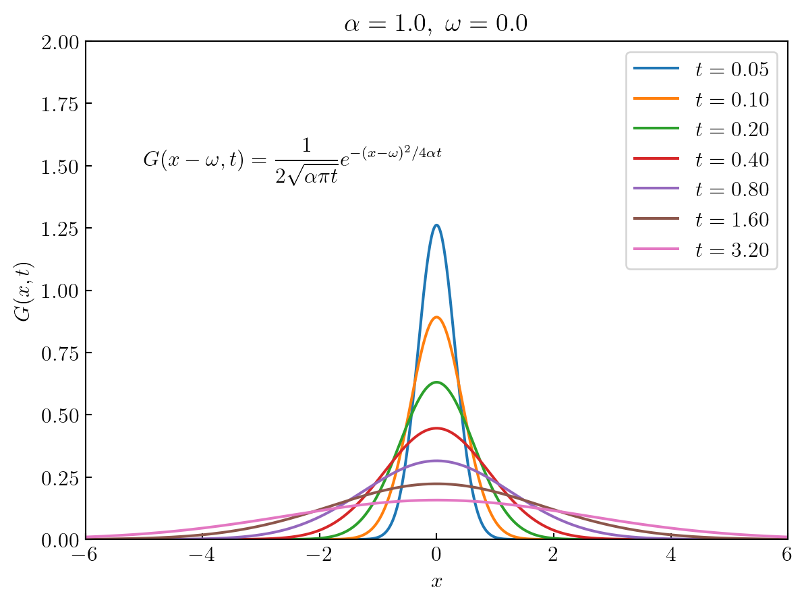
NOTES
The major drawback of the Fourier transform is that all functions can not be transformed. \(\,\)For example, \(\,\)even simple functions like
\[ \begin{aligned} f(x) &= \text{constant} \\ f(x) &= e^x\\ f(x) &= \sin x \end{aligned}\]
cannot be transformed, \(\,\)since the integral
\[\mathcal{F}[f]=\frac{1}{\sqrt{2\pi}} \int_{-\infty}^\infty f(x) e^{-i\omega x}\,dx\]
does not exist. \(\,\)Only functions that damp to zero sufficiently fast as \(|x| \to\infty\) have transforms
11.14 \(~\)Sine and Cosine Transforms
Fourier Sine Transform Pair
\[ \begin{aligned} \mathcal{F}_s\left[ f(x) \right] &= \frac{2}{\pi} \int_0^\infty f(x) \sin\omega x\,dx =F(\omega) \\ \mathcal{F}_s^{-1} \left[ F(\omega) \right ] &= \int_0^\infty F(\omega) \sin\omega x \,d\omega =f(x) \end{aligned}\]
Fourier Cosine Transform Pair
\[ \begin{aligned} \mathcal{F}_c \left[ f(x) \right] &= \frac{2}{\pi} \int_0^\infty f(x) \cos\omega x\,dx =F(\omega) \\ \mathcal{F}_c^{-1} \left[ F(\omega) \right ]&= \int_0^\infty F(\omega) \cos\omega x \,d\omega =f(x) \end{aligned}\]
The next step is to list a few properties of these transforms that make them work
\[{\scriptsize \begin{aligned} \mathcal{F}_s\left[ f'(x) \right] &= \frac{2}{\pi} \int_0^\infty f'(x) \sin\omega x\,dx\\ &= \left.\frac{2}{\pi} \, f(x) \sin\omega x \,\right|_0^\infty -\omega\frac{2}{\pi}\int_0^\infty f(x) \cos\omega x\,dx =-\omega\mathcal{F}_c\left[ f(x) \right] \phantom{xxxxxxxxxx} \end{aligned}}\]
\[{\scriptsize \begin{aligned} \mathcal{F}_c\left[ f'(x) \right] &= \frac{2}{\pi} \int_0^\infty f'(x) \cos\omega x\,dx \\ &= \left.\frac{2}{\pi} \, f(x) \cos\omega x \,\right|_0^\infty +\omega\frac{2}{\pi}\int_0^\infty f(x) \sin\omega x\,dx =-\frac{2}{\pi}\,f(0) +\omega\mathcal{F}_s\left[ f(x) \right] \phantom{xx} \end{aligned}}\]
\[{\scriptsize \begin{aligned} \color{red}{\mathcal{F}_s\left[ f''(x) \right]} &= \frac{2}{\pi} \int_0^\infty f''(x) \sin\omega x\,dx = \left.\frac{2}{\pi}f'(x) \sin\omega x \,\right|_0^\infty -\omega\frac{2} {\pi}\int_0^\infty f'(x) \cos\omega x\,dx \\ &=\color{red}{\frac{2}{\pi}\omega \,f(0)- \omega^2\mathcal{F}_s\left[ f(x) \right]} \end{aligned}}\]
\[{\scriptsize \begin{aligned} \color{red}{\mathcal{F}_c\left[ f''(x) \right]} &= \frac{2}{\pi} \int_0^\infty f''(x) \cos\omega x\,dx =\left.\frac{2}{\pi}f'(x) \cos\omega x \,\right|_0^\infty +\omega\frac{2}{\pi}\int_0^\infty f'(x) \sin\omega x\,dx \\ &=\color{red}{-\frac{2}{\pi} \,f'(0) - \omega^2\mathcal{F}_c\left[ f(x) \right]} \end{aligned}}\]
Solution of an Infinite-Diffusion Problem via the Sine Transform
The problem we are interested in is the infinite diffusion problem
\[ \begin{aligned} u_t &= \alpha u_{xx} && \color{red}{0<x<\infty}, \; 0 < t <\infty \\ \color{red}{u(0,t)} & \color{red}{\;= A} && 0 < t < \infty \\ u(x,0) &= 0 && 0 \leq x < \infty \end{aligned}\]

To solve this, \(\,\)we break into three simple steps. \(\,\)First our strategy is to transform the \(x\)-variable via Fourier sine transform so that we get an ODE in time
\(~\)
STEP 1
We start by transforming each side of the PDE;
\[ \begin{aligned} \mathcal{F}_s [u_t] &=\alpha \mathcal{F}_s\left[u_{xx} \right] \\ &\Downarrow\;{\scriptsize \mathcal{F}_s[u(x,t)]=U(t)} \\ \frac{d}{dt}U(t) &= \alpha\left [\frac{2}{\pi}\omega u(0,t) -\omega^2\mathcal{F}_s[u] \right ]=\alpha\left [A\frac{2}{\pi}\omega -\omega^2 U(t) \right ]\\ &\Downarrow \;{\scriptsize \mathcal{F}_s[u(x,0)]=U(0)}\\ \frac{dU}{dt}&+\alpha \omega^2 U =A\frac{2}{\pi}\alpha\omega, \;U(0)=0 \end{aligned}\]
We arrive at the ODE
STEP 2
To solve this IVP, \(\,\)we could use a variety of elementary techniques from ordinary differential equations. \(\,\)The solution is
\[ U(t)=A\frac{2}{\pi}\left[\frac{1 -e^{-\alpha\omega^2 t}}{\omega} \right]\]
We have now found the sine transformation for the answer \(\,u(x,t)\)
STEP 3
To find the solution, \(\,\)we can either evaluate the inverse transform directly from the integral or else resort to the tables. \(\,\)Using the tables, \(\,\)we get
\[ u(x,t)=A\, \mathrm{erfc} \left( \frac{x}{2\sqrt{\alpha t}} \right)\]
where \(\mathrm{erfc}(x), \;0 < x < \infty\), \(\,\)is called the complementary-error function and is given by
\[ \mathrm{erfc}(x)=\frac{2}{\sqrt{\pi}} \int_x^\infty e^{-t^2}\,dt\]
\(~\)
from scipy import special
def example_plot6(A, alpha, t, x):
plt.figure(figsize=(7, 5))
for tt in t:
plt.plot(x, A *special.erfc(x /(2 *np.sqrt(alpha *tt))),
label='$t=%0.1f$' % tt)
plt.xlim(0, x[-1])
plt.ylim(0, 1.2)
plt.legend(loc='upper right')
plt.xlabel('$x$')
plt.ylabel('$u(x,t)$')
plt.text(2, 0.8,
r'$$u(x,t)=A\, \mathrm{erfc}'
r'\left( \dfrac{x}{2\sqrt{\alpha t}} \right)$$')
plt.title(r'$A=%3.1f, \; \alpha=%3.1f$' %(A, alpha))
plt.show()
A = 1
alpha = 1
t = [0.1, 0.2, 0.4, 0.8, 1.6, 3.2]
x = np.linspace(0, 8)
example_plot6(A, alpha, t, x) 
\(~\)
Example \(\,\)Solve by means of the cosine transform
\[ \begin{aligned} u_t &= \alpha u_{xx} && \color{red}{0 < x < \infty}, \;0 < t < \infty\\ \color{red}{u_x(0,t)} &= 0 && 0 < t < \infty\\ \color{red}{u(x,0)} &=\color{red}{H(1-x)} && 0 \leq x < \infty \end{aligned}\]
where \(H(x)\) is the Heaviside function
\(~\)
from scipy import integrate
x0 = [0, 1, 1, 8]
u0 = [1, 1, 0, 0]
def example_plot6(alpha, t, x, u_solution):
plt.figure(figsize=(7, 5))
plt.plot(x0, u0, 'r:', label='$t=0.0$')
for tt in t:
u = u_solution(alpha, tt, x)
plt.plot(x, u, label='$t=%0.1f$' % tt)
plt.xlim(0, x[-1])
plt.ylim(0, 1.1)
plt.legend(loc='upper right')
plt.xlabel('$x$')
plt.ylabel('$u(x,t)$')
plt.text(2, 0.35,
(r'$$u(x,t)=\dfrac{2}{\pi}\,'
r'\int_0^\infty \dfrac{\sin\omega}{\omega}\,'
r'\exp(-\alpha\omega^2 t)\, \cos\omega x \,d\omega$$'))
plt.title(r'$\alpha=%3.1f$' % alpha)
plt.show()
alpha = 1
t = [0.1, 0.2, 0.4, 0.8, 1.6, 3.2, 6.4]
x = np.linspace(0, 8)
def u_solution(alpha, t, x):
u = np.zeros_like(x)
for i, xx in enumerate(x):
f = lambda w : np.sin(w) /w *np.exp(-alpha*w*w*t) *np.cos(w*xx)
u[i], _ = integrate.quad(f, 0, np.inf)
return 2.0 /np.pi *u
example_plot6(alpha, t, x, u_solution) 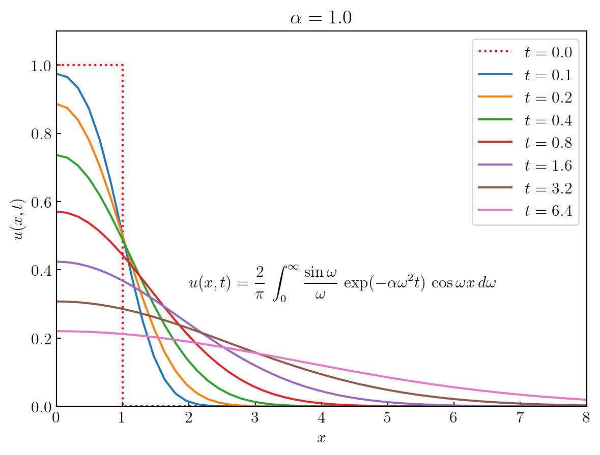
\(~\)
11.15 \(~\)The Laplace Transform
The Laplace transform
\[ \mathcal{L}[f(t)]= \int_0^\infty f(t) e^{-st}\,dt \]
is probably the only integral transform the student has seen before, \(\,\)since it is a very powerful tool for transforming initial-value problems in ODE into algebraic equations
Not only is the Laplace transform useful in transforming ODEs into algebraic equations, \(\,\)but now we will use the Laplace transform to transform PDEs into ODEs
The major difference in applying the Laplace transform to PDEs in contrast to ODEs is that now when the original PDE is transformed, \(\,\)the new resulting equation will be either a new PDE with one less independent variable or else an ODE in one variable
We must then decide how to solve this new problem (maybe by another transform, \(\,\)by separation of variables, \(\,\)and so on)
\(~\)
Property 1 \(\,\) Transform Pair
The Laplace transform and its inverse are given by
\[\begin{aligned} \mathcal{L}[f(t)] &= F(s) =\int_0^\infty f(t) e^{-st}\,dt \\ \mathcal{L}^{-1}[F(s)] &= \frac{1}{2\pi i}\int_{\gamma-i\infty}^{\gamma+i\infty} F(s)e^{st}\,ds \end{aligned}\]
The Laplace transform has one major advantage over the Fourier transform in that the damping factor \(e^{-st}\) in the integrand allows us to transform a wider class of functions (the factor \(e^{-i\omega x}\) in the Fourier transform doesn’t do any damping since its absolute value is one)
In fact, \(\,\)the exact conditions that insure that a function \(f(t)\) has a Laplace transform are given by the following theorem:
\(\,\)
If we can find constants \(\,M\) and \(\,a\,\) such that
\[ \left|f(t)\right| \leq Me^{at} \;\text{ for } \; t > T, \]
then \(\displaystyle \int_0^\infty f(t)\,e^{-st}\,dt~\) exists for \(s>a\)
We now list a few functions that have Laplace transforms
\[{\scriptsize \begin{aligned} f(t) &= 1 && (\text{pick } M=1, a=0) \;\;\longrightarrow\;\; F(s)=\frac{1}{s}\\ f(t) &=e^{2t} && (\text{pick } M=1, a=2) \;\;\longrightarrow\;\; F(s)=\frac{1}{s-2},\;\; s > 2 \\ f(t) &=\sin \omega t && (\text{pick } M=1, a=0) \;\;\longrightarrow\;\; F(s)=\frac{\omega}{s^2 +\omega^2} \\ f(t) &=e^{t^2} && (\text{doesn't have a Laplace transform}) \end{aligned}}\]
In the definition of the Laplace transform, \(\,\)the variable \(s\) is taken to be a real variable \(0 < s < \infty\). \(\,\)It is possible to extend this definition to complex values of \(s\) and, in fact, to evaluate the inverse Laplace transform
\[ \mathcal{L}^{-1}[F(s)]=\frac{1}{2\pi i}\int_{\gamma-i\infty}^{\gamma+i\infty} F(s)e^{st}\,ds \]
We must often resort to contour integration in the complex plane and the theory of residues. \(\,\)We won’t bother ourselves with this topic here but will use the tables for finding inverse transforms
Property 2 \(\,\) Transforms of Partial Derivatives
Suppose we have a function \(u(x,t)\) of two variables. \(\,\)Since the Laplace transform transforms the \(t\)-variable, \(\,\)the rules of transformation for partial derivatives are
\(~\)
\(\displaystyle \color{red}{\mathcal{L}[u_t]}=\int_0^\infty u_t(x,t) e^{-st}\,dt=\color{red}{sU(x,s) -u(x,0)}\)
\(\displaystyle \color{red}{\mathcal{L}[u_{tt}]}=\int_0^\infty u_{tt}(x,t) e^{-st}\,dt=\color{red}{s^2U(x,s) -su(x,0) -u_t(x,0)}\)
\(\displaystyle \mathcal{L}[u_x]=\int_0^\infty u_x(x,t) e^{-st}\,dt=\frac{\partial U}{\partial x}(x,s)\)
\(\displaystyle \mathcal{L}[u_{xx}]=\int_0^\infty u_{xx}(x,t) e^{-st}\,dt=\frac{\partial^2 U}{\partial x^2}(x,s)\)
Property 3 \(\,\) Convolution Theory
Convolution plays the same role here as it did in the Fourier transform, \(\,\)but now the convolution is defined slightly differently. \(\,\)The finite convolution of two functions \(\,f\) and \(g\) is defined by
\[ \color{red}{(f*g)(t)=\int_0^t f(\tau) g(t-\tau)\,d\tau =\int_0^t f(t- \tau) g(\tau)\,d\tau} \]
As in the case of the infinite convolution, \(\,\)the important property of this new convolution is that
\[ \mathcal{L}[f*g]=\mathcal{L}[f]\,\mathcal{L}[g] \]
or the equivalent formula
\[ \mathcal{L}^{-1}\left\{\mathcal{L}[f] \,\mathcal{L}[g] \right\}=f*g \]
For example
\[ \mathcal{L}^{-1}\left[\frac{1}{s} \cdot \frac{1}{s^2+1}\right] = \int_0^t \sin \tau \,d\tau=1-\cos t \]
NOTES
The Laplace transform can also be applied to problems where the PDE is nonhomogeneous (in separation of variables, \(\,\)the equation had to be homogeneous), \(\,\)but the Laplace transform will generally work only if the equation has constant coefficients (in separation of variables, \(\,\)we could have variable coefficients)
\(~\)
Heat Conduction in a Semi-infinite Medium
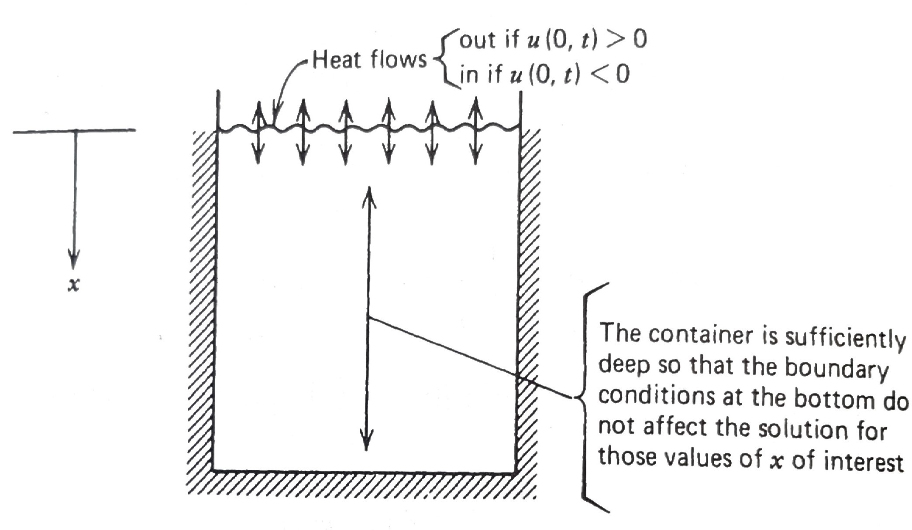
Consider a large (deep) container of liquid that is insulated on the sides. Suppose the liquid has an initial temperature of \(u_0\) and that the temperature of the air above liquid is zero. Our goal is to find the temperature of the liquid at various depths of the container at different \(t\) values:
\[\begin{aligned} u_t &= u_{xx} && 0 < x < \infty,\;0 < t < \infty \\ u_x(0,t) -u(0,t) &= 0 && 0 < t < \infty \\ u(x,0) &= u_0 && 0 < x <\infty \end{aligned}\]
Transforming our problem, \(\,\)we arrive at an ODE in \(x\)
\[ \begin{aligned} sU(x) -u_0 &= \frac{d^2U}{dx^2} && 0 < x < \infty \\[5pt] \frac{dU}{dx}(0) &= U(0) && \end{aligned}\]
We first find the general solution of the ODE, \(\,\)which is
\[ U(x)=c_1 e^{\sqrt{s}x} +c_2 e^{-\sqrt{s}x} +\frac{u_0}{s} \]
Substituting the BCs into this expression allows us to find the constants \(c_1\) and \(c_2\) (first note that \(c_1=0\,\) or else the temperature will go to infinity as \(x\) gets large). \(\,\)Finding \(c_2\) from the BC at \(x=0\,\) gives us the answer for \(U(x)\)
\[ {\scriptsize U(x)= -u_0 \left[ \frac{e^{-\sqrt{s}x}}{s(\sqrt{s} +1)} \right] +\frac{u_0}{s} =\frac{u_0}{s} -u_0\left[ \frac{e^{-\sqrt{s}x}}{s} -\frac{e^{-\sqrt{s}x}}{\sqrt{s}(\sqrt{s} +1)}\right]} \]
Now for the last step, \(\,\)to find \(u(x,t)\), \(\,\)we compute
\[ {\scriptsize u(x,t) =\mathcal{L}^{-1}\left[ U(x,s) \right] =u_0 -u_0 \left[ \mathrm{erfc}\left( \frac{x}{2\sqrt{t}} \right) -\mathrm{erfc}\left( \sqrt{t}+\frac{x}{2\sqrt{t}} \right) e^{x+t}\right]} \]
\(~\)
def example_plot7(t, x, u0, u_solution):
plt.figure(figsize=(7, 5))
plt.plot(x, np.full_like(x, u0), label='$t=0$')
for tt in t:
plt.plot(x, u_solution(tt, x, u0), label='$t=%1.3f$' % tt)
plt.legend(loc='lower right')
plt.xlim(0, 5)
plt.ylim(0.4, 1.2)
plt.xlabel('$x$')
plt.ylabel('$u(x,t)$')
plt.title(r'$u_0=%3.1f$' % u0)
plt.show()
def u_solution(t, x, u0):
sqrt_t = np.sqrt(t)
x_2sqrt_t = x /(2 *sqrt_t)
return u0 -u0*(special.erfc(x_2sqrt_t)
-special.erfc(sqrt_t +x_2sqrt_t) *np.exp(x +t))
u0 = 1
t = np.logspace(-3, 0, 6)
x = np.linspace(0, 5, 300)
example_plot7(t, x, u0, u_solution) 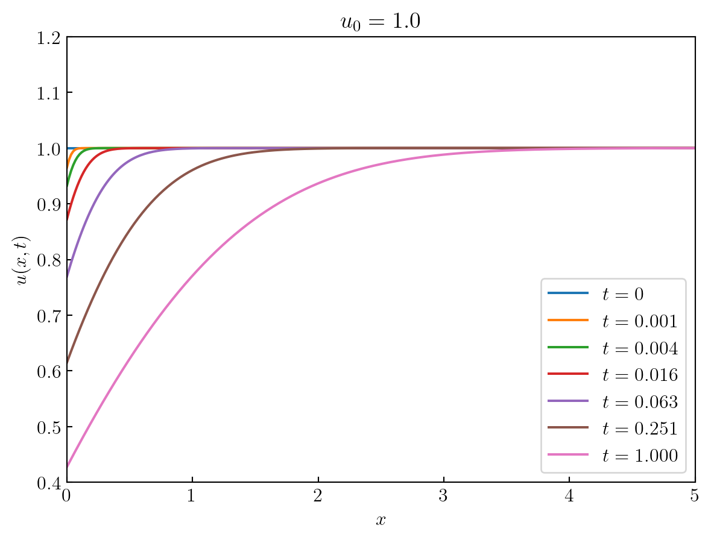
\(~\)
11.16 \(~\)Duhamel’s Principle
Quite often, \(\,\)it is important to find the temperature inside a medium due to time-varying boundary conditions. \(\,\)For example, \(\,\)consider an insulated rod with temperature specified as \(\,f(t)\) on the right end
\[ \begin{aligned} u_t &= u_{xx} && 0 < x < 1, \; 0 < t < \infty \\ u(0,t) &= 0 && 0 < t < \infty \\ u(1,t) &= \color{red}{f(t)} && \\ u(x,0) &= 0 && 0 \leq x \leq 1 \end{aligned} \tag{D1}\label{eq:D1}\]
We may think that the solution to \(\eqref{eq:D1}\) can be easily found once we know the solution to the simpler version (constant temperature on the boundaries)
\[ \begin{aligned} w_t &= w_{xx} && 0 < x < 1, \; 0 < t < \infty \\ w(0,t) &= 0 && 0 < t < \infty \\ w(1,t) &= \color{red}{1} && \\ w(x,0) &= 0 && 0 \leq x \leq 1 \end{aligned} \tag{D2}\label{eq:D2}\]
In fact, \(\,\)if we solve \(\eqref{eq:D1}\) and \(\eqref{eq:D2}\) side by side by the Laplace transform, \(\,\)we will see a striking result (Duhamel’s principle) that will give us the solution to \(\eqref{eq:D1}\) in terms of the solution of \(\eqref{eq:D2}\)
Solving \(\eqref{eq:D2}\) by Laplace transform, \(\,\)we have
\[\begin{aligned} \frac{d^2W}{dx^2} &-sW = 0\\ W(0)&=0 \\ W(1)&=\color{red}{1/s} \\ &\Downarrow {\scriptstyle \text{Solve the ODE}}\\ W(x,s)&=\color{red}{\frac{1}{s} \left[ \frac{\sinh x\sqrt{s}}{\sinh \sqrt{s}} \right]} \\ &\Downarrow {\scriptstyle \text{Find the inverse transform}}\\ w(x,t)=x +\frac{2}{\pi} & \sum_{n=1}^\infty \frac{(-1)^n}{n} e^{-(n\pi)^2 t}\sin n\pi x \end{aligned}\]
And we also obtain the following by transforming \(\eqref{eq:D1}\):
\[\begin{aligned} \frac{d^2U}{dx^2} &-sU = 0\\ U(0)&=0 \\ U(1)&=\color{red}{F(s)} \\ &\Downarrow {\scriptstyle \text{Solve the ODE}}\\ U(x,s)&=F(s) \left[ \frac{\sinh x\sqrt{s}}{\sinh \sqrt{s}} \right] =F(s) s \color{red}{\frac{1}{s}\left[ \frac{\sinh x\sqrt{s}}{\sinh \sqrt{s}} \right]} =F(s) sW(x,s)\\ &\big\Downarrow \;{\scriptstyle \mathcal{L}[w_t]=sW -w(x,0)=sW}\\ U(x,s)&=F(s) \mathcal{L}[w_t] \\ &\big\Downarrow \;{\scriptstyle \text{Find the inverse transform}}\\ \color{red}{u(x,t)} &= \mathcal{L}^{-1} \left[ F(s) \mathcal{L}[w_t] \right] =f(t) * w_t(x,t) \\ &\color{red}{\;= \int_0^t w_{t -\tau}(x,t-\tau) \, f(\tau) \,d\tau} \\ &= \left. -w(x,t-\tau)\, f(\tau) \phantom{\frac{}{}} \right |_{\,0}^{\,t} +\int_0^t w(x,t-\tau) f'(\tau) \,d\tau\\ &= \int_0^t w(x,t-\tau) f'(\tau)\,d\tau +w(x,t) \, f(0) \end{aligned}\]
We have found the solution \(u(x,t)\) to the time-varying problem in terms of the solution to the ease problem (constant BCs). \(\,\)The above result is known as Duhamel’s principle
\(~\)
NOTES
There are another interesting version of Duhamel’s principle that gives the answer to \(\eqref{eq:D1}\) in terms of the solution \(\,v(x,t)\) of the alternative simple
\[ \begin{aligned} v_t &= v_{xx} && 0 < x < 1, \; 0 < t < \infty \\ v(0,t) &= 0 && 0 < t < \infty \\ v(1,t) &= \color{red}{\delta(t)} && \\ v(x,0) &= 0 && 0 \leq x \leq 1 \end{aligned}\]
Knowing this formula
\[ \color{red}{u(x,t)=\int_0^t v(x,t-\tau) \,f(\tau)\,d\tau} \]
allows us to find \(u(x,t)\) to an arbitrary boundary temperature \(\,f(t)\) once we have carried out an experiment to determine the temperature response \(\,v(x,t)\) from an impulse temperature
11.17 \(~\)The Convection Term \(u_x\) in the Diffusion Problems
Suppose now we consider the problem of finding the concentration of a substance upwards from the surface of the earth where the substance both diffuses through the air and is carried upwards (convected) by moving currents (moving with velocity \(V\))
In any case, \(\,\)it is our purpose here to solve the diffusion-convection equation
\[ u_t = Du_{xx} -V u_x\]
To get an idea of what solutions look like or how they behave with the convection term included, \(\,\)let’s first work a problem that is pure convection (the diffusion term is zero)
A typical problem would be dumping a substance into a clean air (moving with upward velocity \(V\)) and observing the concentration of the substance at the upperside. \(\,\)Then the concentration of substance \(u(x,t)\) can be found by solving the following mathematical model:
\[ \begin{aligned} u_t &= -Vu_x && \phantom{xx}\color{red}{0 < x < \infty}, \; 0 < t < \infty \\ \\ u(0,t) &= P &&\longleftarrow\; \text{Constant Input of the Substance} \\ u(x,0) &= 0 &&\longleftarrow\; \text{Initially a Clean Air} \end{aligned} \tag{CV}\label{eq:CV}\]
Since the \(x\)-variable is unbounded, \(\,\)we use the Laplace transform on \(t\)
\[\begin{aligned} sU(x) &=-V\frac{dU}{dx}, \;\;\; 0 < x < \infty \\ U(0) &= \frac{P}{s}\\ &\Downarrow \\ U(x) &=\frac{P}{s} e^{-\frac{x}{V}s} \\ &\Downarrow \\ u(x,t) &= P \,H(t -x/V) \\ &\Downarrow \\ u(x,t) &= \begin{cases} \,0 & t < x/V \\ P & t \geq x/V \end{cases} \end{aligned}\]
To see what happens when a moving wave diffuses, \(\,\)we solve the following problem \((P=1)\)
\[ \begin{aligned} u_t &= Du_{xx}-Vu_x && -\infty < x < \infty, \;0 < t < \infty \\ u(x,0) &= P\left(1 -H(x)\right) && -\infty < x < \infty \end{aligned} \tag{DC}\label{eq:DC}\]
Note that in the new problem \(\eqref{eq:DC}\), \(\,\)we have moved the boundary to \(-\infty\) (we now have an initial-value problem)
In this case, \(\,\)we introduce a new coordinate \(\xi\), \(\,\)which moves along the \(x\)-axis with velocity \(V\). \(\,\)In other words, \(\,\)we now place our coordinate system so that it moves with the wave front (of course, \(\,\)now when diffusion in addition to convection, \(\,\)we won’t have a sharp wave front)
Mathematically this says that we change our space coordinate \(\,x\,\) to \(\,\xi=x -Vt\). \(\,\)It’s now clear that when \(\xi=0,\) \(\,\)we are on the wave front
To begin, \(\,\)we introduce new coordinates \((\xi, \tau)\) and use the chain rule to get the new IVP in terms of \(\xi\) and \(\tau\):
\[\begin{aligned} u_t&= D u_{xx} -Vu_x\\ &\Downarrow\; \xi=x-Vt, \;\tau=t \\ u_t&= u_{\xi}\xi_t+u_\tau\tau_t=-Vu_\xi+u_\tau\\ u_x&= u_\xi \xi_x+u_\tau\tau_x =u_\xi\\ u_{xx}&=(u_\xi)_x=u_{\xi\xi}\xi_x=u_{\xi\xi} \\ &\Downarrow \\ -Vu_\xi+u_\tau &=Du_{\xi\xi} -Vu_\xi\\ &\big\Downarrow \;\xi=x \text{ at } t=0\\ u_\tau &=D u_{\xi\xi},\;\;\;-\infty<\xi<\infty \\ u(\xi,0)&=P(1-H(\xi))=\phi(\xi) \end{aligned}\]
This problem has already been solved in sec-x1-13 by the Fourier transform and has the solution
\[ {\scriptsize u(\xi,\tau)=\frac{1}{2\sqrt{D\pi\tau}} \int_{-\infty}^{\infty}\phi(\omega) e^{-(\xi-\omega)^2/4D\tau}\,d\omega =\frac{P}{2\sqrt{D\pi\tau}} \int_{-\infty}^0 e^{-(\xi-\omega)^2/4D\tau}\,d\omega } \]
where \(\,\phi(\omega)\) is the initial condition
By letting
\[{\beta=\frac{\xi -\omega}{2\sqrt{D\tau}},\;\; d\beta=-\frac{1}{2\sqrt{D\tau}}d\omega}\]
we get the interesting result
\[\begin{aligned} \displaystyle u(\xi,\tau)&=\frac{P}{2} \left[ \frac{2}{\sqrt{\pi}} \int_{\frac{\xi}{2\sqrt{D\tau}}}^\infty e^{-\beta^2}\,d\beta \right] = {\scriptsize \begin{cases} \displaystyle\;\frac{P}{2} \left[ 1+\mathrm{erf}\left( -\frac{\xi}{2\sqrt{D\tau}} \right) \right],& \xi<0 \\ \displaystyle\;\frac{P}{2}\, \mathrm{erfc}\left( \frac{\xi}{2\sqrt{D\tau}} \right), & \xi \geq 0 \end{cases}} \end{aligned}\]
Finally, \(\,\)the solution of our problem in terms of the coordinates \(x\) and \(t\,\) is
\[u(x,t)=\begin{cases} \displaystyle\;\frac{P}{2} \left[ 1+\mathrm{erf}\left( \frac{Vt -x}{2\sqrt{Dt}} \right) \right], & Vt>x \\ \displaystyle\;\frac{P}{2}\, \mathrm{erfc}\left( \frac{x-Vt}{2\sqrt{Dt}} \right), & Vt \leq x \end{cases}\]
\(~\)
def example_plot8(D, V, t, x, u_solution):
plt.figure(figsize=(7, 5))
plt.plot([-1, 0, 0, x[-1]], [1, 1, 0, 0], 'r:', label='$t=0.0$')
for tt in t:
x_tt = V*tt
plt.plot(x, u_solution(D, V, tt, x), label='$t=%3.1f$' % tt)
plt.plot([-1, x_tt, x_tt, x[-1]], [1, 1, 0, 0], 'k:')
plt.legend(loc='upper right')
plt.xlim(-1, x[-1])
plt.ylim(0, 1.2)
plt.xlabel('$x$')
plt.ylabel('$u(x,t)$')
plt.title(r'$D=%4.2f,\;V=%3.1f,\;P=1.0$' % (D, V))
plt.show()
def u_solution(D, V, t, x):
x_t = (x -V*t)/(2.0 *np.sqrt(D*t))
return [0.5*(1.0 +special.erf(-q))
if q <= 0.0 else 0.5*special.erfc(q) for q in x_t]
D = 0.5
V = 1.0
t = [2.0, 4.0, 6.0, 8.0]
x = np.linspace(-1, 16, 400)
example_plot8(D, V, t, x, u_solution) 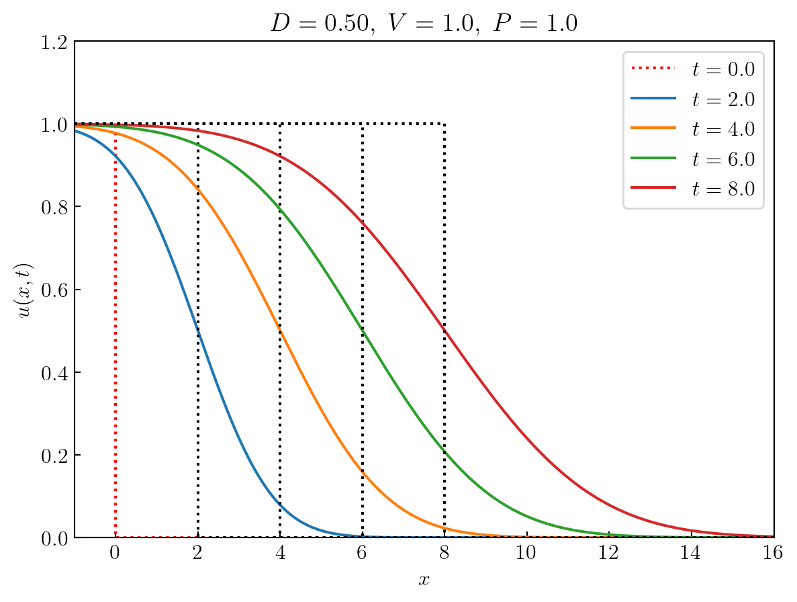
\(~\)